<title>Bharath · Structural Dynamics</title>
<meta name="claude:viewport-fit-sides" content="cover">
<link rel="preconnect" href="https://fonts.googleapis.com">
<link rel="preconnect" href="https://fonts.gstatic.com" crossorigin>
<link rel="stylesheet" href="https://fonts.googleapis.com/css2?family=Carlito:ital,wght@0,400;0,700;1,400&display=swap">
<style>
/* Layout: an engineering report. Each case opens with a drawing-style title block, then numbered report sections. */
:root{
  --bg:#F6F1E7; --band:#E6EEF6; --card:#FFFDF8; --panel:#EFE8DA; --ink:#0B2545; --text:#1C2B3A; --sub:#3E5266; --rule:#C8CFD6; --blue:#1F5FA8; --blue-soft:#DCE8F5; --red:#B83227; --green:#2C6E52;
  color-scheme:light;
  --f:"Carlito","Calibri","Segoe UI",system-ui,sans-serif;
}
*{box-sizing:border-box}
html{scroll-behavior:smooth}
body{background:var(--bg);color:var(--text);font-family:var(--f);font-size:17px;line-height:1.55;font-variant-numeric:lining-nums}
body::before{content:"";position:fixed;inset:0 0 auto;height:env(safe-area-inset-top,0px);z-index:10;background:var(--bg)}
.wrap{max-width:1120px;margin:0 auto;padding-left:max(16px, env(safe-area-inset-left, 0px));padding-right:max(16px, env(safe-area-inset-right, 0px))}
a{color:var(--blue)}
a:focus-visible,summary:focus-visible,button:focus-visible{outline:2px solid var(--blue);outline-offset:3px}
h1,h2,h3,h4{color:var(--ink);font-weight:700;margin:0;text-wrap:balance}
p{margin:0 0 .9rem}
ul{margin:0;padding-left:1.15rem} li{margin-bottom:.35rem}
.num{font-variant-numeric:tabular-nums}

/* header */
.top{position:sticky;top:env(safe-area-inset-top,0px);z-index:9;background:var(--bg);border-bottom:1px solid var(--rule)}
.top .wrap{display:flex;align-items:center;gap:1.5rem;min-height:54px;flex-wrap:wrap}
.top b{color:var(--ink);font-size:1.05rem}
.top nav{display:flex;gap:1.3rem;margin-left:auto;flex-wrap:wrap}
.top nav a{color:var(--sub);text-decoration:none;font-size:.98rem;padding-block:.15rem;border-bottom:2px solid transparent}
.top .hdr-role{font-weight:400;color:var(--sub)}
.top nav a.mail{color:var(--blue);font-weight:700}
.top nav a:hover,.top nav a.on{color:var(--ink);border-color:var(--blue)}

/* profile */
.profile{padding-block:2.6rem 1.4rem}
.profile .wrap{display:grid;grid-template-columns:minmax(0,1fr) minmax(0,1.05fr);gap:2.4rem;align-items:start}
.profile h1{font-size:2.5rem;line-height:1.1}
.role{font-size:1.25rem;color:var(--blue);font-weight:700;margin:.35rem 0 1rem}
.facts{border-top:2px solid var(--ink);margin-top:1.2rem}
.facts div{display:grid;grid-template-columns:9.5rem minmax(0,1fr);gap:1rem;padding:.45rem 0;border-bottom:1px solid var(--rule)}
.facts dt{font-weight:700;color:var(--ink)} .facts dd{margin:0}
.stage{position:relative;aspect-ratio:16/11;max-width:100%;border:1px solid var(--rule);background:var(--panel)}
.stage canvas{position:absolute;inset:0;width:100%;height:100%}
.stage .modes{position:absolute;top:10px;left:10px;right:10px;display:flex;gap:4px;flex-wrap:wrap}
.stage .modes button{font:inherit;font-size:.86rem;padding:1px 7px;border:1px solid var(--rule);background:var(--bg);color:var(--sub);cursor:pointer}
.stage .modes button.p{border-color:var(--blue);color:var(--blue);font-weight:700}
.stage .modes button[aria-pressed="true"]{background:var(--ink);border-color:var(--ink);color:var(--bg)}
.stage .cap{position:absolute;left:12px;right:12px;bottom:8px;font-size:.92rem;color:var(--sub);display:flex;justify-content:space-between;gap:1rem;flex-wrap:wrap}
.stage .cap b{color:var(--ink)}
figcaption{font-size:.95rem;color:var(--sub);line-height:1.45;margin-top:.55rem}
figcaption b{color:var(--ink);margin-right:.35rem}

/* case register */
.register{margin-top:2rem}
table{border-collapse:collapse;width:100%;font-variant-numeric:tabular-nums}
.tbl{overflow-x:auto}
th{text-align:left;font-weight:700;color:var(--ink);border-bottom:2px solid var(--ink);padding:.45rem .8rem .45rem 0;white-space:nowrap}
td{border-bottom:1px solid var(--rule);padding:.5rem .8rem .5rem 0;vertical-align:top}
td.r,th.r{text-align:right}
.register td:first-child{color:var(--blue);font-weight:700;white-space:nowrap}
.register a{color:var(--ink);font-weight:700;text-decoration:none}
.register a:hover{color:var(--blue);text-decoration:underline}
.note{font-size:.98rem;color:var(--sub);margin-top:1rem;max-width:56rem}

/* case */
.case{border-top:3px solid var(--ink);margin-top:3.6rem;padding-top:1.6rem}
.tblock{display:grid;grid-template-columns:minmax(0,1.25fr) minmax(0,1fr);border:1.5px solid var(--ink)}
.tblock .ttl{padding:1rem 1.2rem;border-right:1.5px solid var(--ink)}
.tblock .ttl span{display:block;color:var(--blue);font-weight:700;margin-bottom:.25rem}
.tblock h2{font-size:1.9rem;line-height:1.15}
.tblock .tsum{margin:.9rem 0 0;color:var(--sub);font-size:1.02rem;border-top:1px solid var(--rule);padding-top:.7rem}
.tblock dl{margin:0;display:grid;grid-template-columns:auto minmax(0,1fr)}
.tblock dt,.tblock dd{margin:0;padding:.38rem .7rem;border-bottom:1px solid var(--rule);font-size:.95rem}
.tblock dt{font-weight:700;color:var(--ink);border-right:1px solid var(--rule);white-space:nowrap}
.tblock dl > :nth-last-child(-n+2){border-bottom:0}
.sec{display:grid;grid-template-columns:12.5rem minmax(0,1fr);gap:1.8rem;margin-top:2rem}
.sec h3{font-size:1.15rem;line-height:1.3}
.sec h3 i{font-style:normal;color:var(--blue);margin-right:.4rem}
.sec .body{min-width:0;max-width:46rem}
.sec .wide{min-width:0;max-width:none}
.key{display:grid;grid-template-columns:repeat(3,minmax(0,1fr));border:1px solid var(--rule);margin:.2rem 0 1.1rem}
.key div{padding:.6rem .8rem;border-right:1px solid var(--rule)} .key div:last-child{border-right:0}
.key b{display:block;color:var(--ink);font-size:1.35rem;line-height:1.2}
.key span{font-size:.93rem;color:var(--sub)}
.key .bad b{color:var(--red)}
figure{margin:0 0 1.2rem}
figure img{display:block;width:100%;height:auto;max-width:100%}
.pair{display:grid;grid-template-columns:minmax(0,1fr) minmax(0,1fr);gap:1.4rem}
.rec{border:1.5px solid var(--ink);background:var(--panel)}
.rec h4{font-size:1rem;padding:.45rem .9rem;border-bottom:1px solid var(--rule);background:var(--bg)}
.rec div{padding:.8rem .9rem .3rem}
.assume li{margin-bottom:.5rem}
.assume b{color:var(--ink)}

/* process flow */
.flow{list-style:none;padding:0;margin:.3rem 0 .4rem;display:grid;grid-auto-flow:column;grid-auto-columns:minmax(0,1fr);gap:22px;counter-reset:st}
.flow li{position:relative;margin:0;display:flex;flex-direction:column;gap:8px}
.flow .st{border:1.5px solid var(--rule);background:var(--bg);padding:.5rem .6rem .55rem;min-height:6.4rem;transition:border-color .35s,background .35s,transform .35s}
.flow .st::before{counter-increment:st;content:counter(st);display:inline-grid;place-items:center;width:1.35rem;height:1.35rem;border-radius:50%;background:var(--rule);color:var(--ink);font-size:.8rem;font-weight:700;margin-bottom:.3rem;transition:background .35s,color .35s}
.flow .st b{display:block;color:var(--ink);font-size:.98rem;line-height:1.2}
.flow .st span{display:block;font-size:.86rem;color:var(--sub);line-height:1.3;margin-top:.2rem}
.flow .ck{font-size:.84rem;line-height:1.3;color:var(--green);border-left:2px solid var(--green);padding-left:.45rem;min-height:2.2rem}
.flow .ck.no{color:var(--red);border-color:var(--red)}
.flow .ck:empty{border-color:transparent}
.flow li:not(:last-child)::after{content:"";position:absolute;top:3.1rem;right:-19px;width:16px;height:2px;background:var(--rule);transition:background .35s}
.flow li:not(:last-child)::before{content:"";position:absolute;top:calc(3.1rem - 4px);right:-21px;border:5px solid transparent;border-left:7px solid var(--rule);border-right:0;transition:border-color .35s}
.flow li.on .st{border-color:var(--blue);background:var(--blue-soft)}
.flow li.on .st::before{background:var(--blue);color:var(--bg)}
.flow li.on::after{background:var(--blue)} .flow li.on::before{border-left-color:var(--blue)}
.flow li.done .st::before{background:var(--ink);color:var(--bg)}
.lane{display:flex;justify-content:space-between;font-size:.84rem;color:var(--sub);border-top:1px dashed var(--rule);padding-top:.25rem}
.lane b{color:var(--green)}

/* expandable verification */
details.more{border:1px solid var(--rule);margin-top:1.4rem}
details.more>summary{list-style:none;cursor:pointer;padding:.7rem 1rem;display:flex;justify-content:space-between;align-items:center;gap:1rem;font-weight:700;color:var(--ink);background:var(--panel)}
details.more>summary::-webkit-details-marker{display:none}
details.more>summary::after{content:"+";font-size:1.35rem;line-height:1;color:var(--blue);transition:transform .25s}
details.more[open]>summary::after{transform:rotate(45deg)}
details.more[open]>summary small{visibility:hidden}
details.more>summary small{font-weight:400;color:var(--sub);font-size:.92rem}
.more-body{padding:1rem 1rem .4rem;display:grid;gap:1.4rem}
.more-body>div{min-width:0}
.more-body img{display:block;width:100%;height:auto;max-width:100%}
.more-body h4{font-size:1.02rem;margin-bottom:.4rem}
.calc{border-left:2px solid var(--blue);padding:.2rem 0 .2rem .8rem;font-variant-numeric:tabular-nums}
.calc p{margin:0 0 .35rem}
.calc .eq{color:var(--ink)}
.ok{color:var(--green);font-weight:700} .bad{color:var(--red);font-weight:700}

/* widget */
.slider{border:1px solid var(--rule);padding:.9rem 1rem;margin-bottom:1.2rem}
.slider .row{display:flex;gap:1rem;align-items:center;flex-wrap:wrap}
.slider label{color:var(--ink);font-weight:700}
.slider input{flex:1 1 220px;min-width:0;accent-color:var(--blue)}
.slider .out{display:grid;grid-template-columns:repeat(4,minmax(0,1fr));gap:0;margin-top:.7rem;border-top:1px solid var(--rule)}
.slider .out div{padding:.45rem .6rem .1rem 0}
.slider .out b{display:block;font-size:1.3rem;color:var(--ink);font-variant-numeric:tabular-nums}
.slider .out span{font-size:.9rem;color:var(--sub)}
.verdict{font-weight:700;padding:.1rem .55rem;border:1.5px solid currentColor}
.verdict.go{color:var(--green)} .verdict.no{color:var(--red)}

.foot{border-top:3px solid var(--ink);margin-top:4rem;padding-block:1.4rem 3rem;color:var(--sub);font-size:.95rem}
.foot .wrap{display:flex;gap:2rem;flex-wrap:wrap;justify-content:space-between}


.band{background:var(--bg)}
.band.blue{background:var(--band)}
.band>.wrap{padding-block:.2rem 3rem}
.case{border-top:0!important;margin-top:0!important;padding-top:2.4rem!important}
.tblock,.rec,.slider,.key,.flow .st,details.more,.stage{background:var(--card)}
.rec h4{background:var(--panel)}
details.more>summary{background:var(--panel)}
.sect-head{display:flex;align-items:baseline;gap:1rem;flex-wrap:wrap;border-bottom:3px solid var(--ink);padding-bottom:.5rem;margin-bottom:1.4rem}
.sect-head h2{font-size:1.9rem}
.sect-head span{color:var(--sub)}
.metrics{display:grid;grid-template-columns:repeat(4,minmax(0,1fr));border:1.5px solid var(--ink);background:var(--card);margin-bottom:1.6rem}
.metrics div{padding:.8rem .9rem;border-right:1px solid var(--rule)} .metrics div:last-child{border-right:0}
.metrics b{display:block;color:var(--ink);font-size:1.55rem;line-height:1.15;font-variant-numeric:tabular-nums}
.metrics span{font-size:.93rem;color:var(--sub)}
.wp td:first-child{font-weight:700;color:var(--ink);width:15rem}
.wp td.res{color:var(--blue);font-weight:700;white-space:nowrap}
.wp td.res i.br{display:block}
.mhead{display:grid;grid-template-columns:12.5rem minmax(0,1fr);gap:1.8rem;margin-top:2.4rem;align-items:baseline}
.mhead h3{font-size:1.25rem} .mhead h3 i{font-style:normal;color:var(--blue);margin-right:.4rem}
.mhead p{margin:0;color:var(--sub)}
.why{border:1.5px solid var(--ink);background:var(--card);padding:.8rem 1rem;margin-bottom:1rem}
.why b{color:var(--ink)}
@media (max-width:880px){.metrics{grid-template-columns:minmax(0,1fr) minmax(0,1fr)} .metrics div{border-bottom:1px solid var(--rule)} .mhead{grid-template-columns:minmax(0,1fr);gap:.3rem} .wp td:first-child{width:auto}}
@media (max-width:880px){
  .profile .wrap,.sec,.tblock{grid-template-columns:minmax(0,1fr)}
  .tblock .ttl{border-right:0;border-bottom:1.5px solid var(--ink)}
  .flow{grid-auto-flow:row;grid-auto-columns:auto;gap:14px}
  .flow li{display:grid;grid-template-columns:minmax(0,1.3fr) minmax(0,1fr);gap:10px}
  .flow .st{min-height:0}
  .flow li:not(:last-child)::after{top:auto;bottom:-12px;left:22px;right:auto;width:2px;height:10px}
  .flow li:not(:last-child)::before{top:auto;bottom:-14px;left:18px;right:auto;border:5px solid transparent;border-top:7px solid var(--rule);border-bottom:0}
  .flow li.on::before{border-top-color:var(--blue);border-left-color:transparent}
  .pair,.key,.slider .out{grid-template-columns:minmax(0,1fr)}
  .key div{border-right:0;border-bottom:1px solid var(--rule)}
  .facts div{grid-template-columns:minmax(0,1fr);gap:0}
  .profile h1{font-size:2rem}
  .top nav{margin-left:0;gap:1rem;font-size:.92rem;flex-wrap:nowrap;overflow-x:auto;width:100%;scrollbar-width:none;padding-bottom:.15rem}
  .top nav::-webkit-scrollbar{display:none}
  .top nav a{white-space:nowrap}
  table.wp thead{display:none}
  table.wp,table.wp tbody,table.wp tr,table.wp td{display:block;width:auto!important}
  table.wp tr{border-bottom:1px solid var(--rule);padding:.6rem 0}
  table.wp td{border:0;padding:.1rem 0}
  table.wp td.res{white-space:normal}
  table.wp td.res i.br{display:inline}
  table.wp td.res i.br::before{content:" · "}
  table.wp td.res::before{content:"Result: ";color:var(--sub);font-weight:400}
  .top .hdr-role{display:none}
  .top .wrap{gap:.3rem 1rem;padding-block:.35rem}
}
@media (prefers-reduced-motion: reduce){ .flow .st,.flow li::after{transition:none} }
</style>

<header class="top"><div class="wrap">
  <b>Bharath <span class="hdr-role">· Senior FEA Engineer</span></b>
  <nav aria-label="Sections"><a href="#xp">Experience</a><a href="#methods">Methods</a><a href="#c1">1 Flutter</a><a href="#c2">2 Loads</a><a href="#c3">3 Vibration</a><a href="#c4">4 Distortion</a><a class="mail" href="mailto:bharath31015r@gmail.com">Contact</a></nav>
</div></header>

<main>
<section class="profile"><div class="wrap">
  <div>
    <h1>Bharath</h1>
    <div class="role">Senior FEA Engineer: Structural Dynamics, Aeroelasticity and Simulation Methods</div>
    <p>Senior FEA engineer on certified military fixed-wing programmes since 2022. I deliver GVT-based flutter clearances, store carriage loads and vibration qualification, and I build the methods behind them: DMAP solution sequences, component mode synthesis, regression-based sizing for solid structures, and automated model and post-processing pipelines.</p>
    <p>Programme work is confidential. The record below gives anonymised scope and results; the four case studies are rebuilt on public data or generic models.</p>
    <dl class="facts">
      <div><dt>Experience</dt><dd>BlueHat Solutions, AS9100 aerospace (Aug 2023 to date). DRDO Aeronautical Development Establishment, Technical Intern (Oct 2022 to Jun 2023).</dd></div>
      <div><dt>Programmes</dt><dd>6 GVT-based flutter clearance campaigns on 4 military aircraft; formal GVT and flutter report submitted to the military airworthiness authority</dd></div>
      <div><dt>Analysis</dt><dd>Modal correlation, flutter, store loads, random, sine-on-random, shock and gunfire vibration, fatigue, contact, nonlinear and explicit, topology and size optimisation, composites, thermal, FMECA</dd></div>
      <div><dt>Solvers</dt><dd>MSC Nastran (SOL 101, 103, 144, 145, 146, 200, DMAP), HyperMesh, OptiStruct, Abaqus, ANSYS Mechanical and Explicit Dynamics</dd></div>
      <div><dt>Programming</dt><dd>DMAP, Python, MATLAB, Tcl</dd></div>
      <div><dt>Education</dt><dd>BE Aerospace Engineering, BMS College of Engineering</dd></div>
      <div><dt>Location</dt><dd>Bengaluru, India</dd></div>
      <div><dt>Email</dt><dd><a href="mailto:bharath31015r@gmail.com">bharath31015r@gmail.com</a></dd></div>
    </dl>
  </div>
  <figure>
    <div class="stage" aria-label="Animated wireframe of the GVT accelerometer layout on the Hawk T1A wing, moving in the measured mode shapes">
      <canvas id="wing"></canvas>
      <div class="modes" id="modebtns"></div>
      <div class="cap"><span id="modecap"></span><span>GVT, burst random, 10 averages</span></div>
    </div>
    <figcaption><b>Measured mode shapes.</b> Hawk T1A starboard-wing GVT (University of Sheffield open data, CC BY 4.0), shown on the upper-surface accelerometer lines. Modes identified from the FRFs. Outlined frequencies are the three modes used for correlation in Case 1.</figcaption>
  </figure>
  
</div>
<div class="wrap">
  <div class="register tbl">
    <table>
      <thead><tr><th>Case</th><th>Study</th><th>Discipline</th><th>Outcome</th></tr></thead>
      <tbody>
        <tr><td>1</td><td><a href="#c1">Store flutter clearance on a GVT-correlated wing</a></td><td>Aeroelasticity</td><td>Store cleared; clearance requires wing torsion ≥ 78 Hz, which the GVT did not measure</td></tr>
        <tr><td>2</td><td><a href="#c2">CFD-to-FE load mapping and load-fidelity comparison</a></td><td>Loads, static strength</td><td>Balance within 0.28%; hand loads under-predict torsion by 17%</td></tr>
        <tr><td>3</td><td><a href="#c3">Vibration qualification of a helicopter EO/IR turret mount</a></td><td>Vibration, shock, fatigue</td><td>Isolator retuned off the gun rate; safe life 7,184 h to 9,050 h</td></tr>
        <tr><td>4</td><td><a href="#c4">Machining distortion of a 7075-T651 H-beam</a></td><td>Residual stress, manufacturing</td><td>Final form 28 µm; 81 µm in-process bow sets the Op20 fixture</td></tr>
      </tbody>
    </table>
  </div>
</div>
</section>

<!-- ================================================================ EXPERIENCE -->
<section class="band blue" id="xp"><div class="wrap" style="padding-top:2.4rem">
  <div class="sect-head"><h2>Professional experience</h2><span>BlueHat Solutions, Bengaluru · AS9100 · August 2023 to date · anonymised</span></div>
  <div class="metrics">
    <div><b>6 campaigns</b><span>GVT-based flutter clearances on 4 military aircraft</span></div>
    <div><b>~1,000 → 3–4</b><span>store load cases screened to the governing ground-test cases</span></div>
    <div><b>3–5%</b><span>analysis against flight test, store installation loads</span></div>
    <div><b>−30% mass</b><span>regression-based sizing of a 7.8M-element solid part</span></div>
  </div>
  <div class="tbl"><table class="wp">
    <thead><tr><th>Area of work</th><th>Scope and my role</th><th class="r">Result</th></tr></thead>
    <tbody>
      <tr><td>GVT and flutter clearance</td><td>Test planning, transformation of measured data onto the analysis frame (including multi-panel swept fins), modal extraction, correlation, physical matrix recovery, Karpel CMS store configurations, SOL 145 with my own DMAP, formal report to the airworthiness authority</td><td class="res">6 campaigns, 4 aircraft</td></tr>
      <tr><td>Store carriage loads</td><td>Screened about 1,000 load cases to 10–15 critical, ranked by reserve factor, selected 3–4 for the ground static test. CFD pressures mapped to FE with my Python tool. Sway-brace contact modelled with CGAP so braces carry compression only</td><td class="res">ground test ~7%<i class="br"></i>flight test 3–5%</td></tr>
      <tr><td>CFD-to-FE load mapping</td><td>Python tool mapping surface pressures to nodal loads on the structural model. Applied to complex store carriage cases on a full installation model; the moment difference came from the different discretisation of the CFD and FE meshes</td><td class="res">forces ~0.001%<i class="br"></i>moments ≤ 5.4%</td></tr>
      <tr><td>Regression-based sizing</td><td>Method I developed to size a tapered solid component that SOL 200 cannot size directly. 7.8 million elements, 18 subcases. Validated by physical test</td><td class="res">40 → 28 kg<i class="br"></i>18 → 8 mm</td></tr>
      <tr><td>Topology optimisation</td><td>SOL 200 and OptiStruct, about 3.2 million CTETRA elements, 14 subcases. Diagnosed and resolved UFM 339, SFM 3008 in EMG, and a material-collapse formulation error</td><td class="res">3.2M elements<i class="br"></i>14 subcases</td></tr>
      <tr><td>Fatigue test method</td><td>Method I developed to reproduce the critical flight load case on test hardware through an equivalent force applied by a dedicated fixture</td><td class="res">86% match to target</td></tr>
      <tr><td>Dynamic environments</td><td>MIL-STD-810H random and shock, sine-on-random for helicopter equipment mounts with rotor-tone isolation, gunfire vibration, Miner's-rule damage</td><td class="res"><a href="#c3">Case 3</a> shows the method</td></tr>
      <tr><td>Manufacturing simulation</td><td>ANSYS five-block distortion chain for a CNC-milled 7075 U-channel; explicit chip-formation model of 7075-T651</td><td class="res">post-machining sag explained, linear method</td></tr>
    </tbody>
  </table></div>
  <p class="note">Earlier: Technical Intern, DRDO Aeronautical Development Establishment, October 2022 to June 2023. Composite structural analysis and optimisation for a UAV structure.</p>
</div></section>

<!-- ================================================================ METHODS -->
<section class="band" id="methods"><div class="wrap" style="padding-top:2.4rem">
  <div class="sect-head"><h2>Simulation methods and automation</h2><span>methods and tools I have built, shown as process; no programme data</span></div>

  <div class="mhead"><h3><i>M1</i>Test-to-clearance aeroelastic chain</h3><p>From measured GVT data to a flutter clearance the authority can sign, with store configurations added without rebuilding the model.</p></div>
  <div class="sec" style="margin-top:1rem"><div></div><div class="wide">
    <ol class="flow" data-flow>
      <li><div class="st"><b>GVT data</b><span>coordinate transformation to the analysis frame</span></div><div class="ck">swept multi-panel fins</div></li>
      <li><div class="st"><b>Correlation</b><span>modal extraction, MAC, frequency pairing</span></div><div class="ck">test-correlated model</div></li>
      <li><div class="st"><b>Matrix recovery</b><span>physical K and M from the correlated model</span></div><div class="ck">MATLAB, DMIG export</div></li>
      <li><div class="st"><b>Store configurations</b><span>Karpel component mode synthesis</span></div><div class="ck">no full-model rebuild</div></li>
      <li><div class="st"><b>SOL 145</b><span>CAERO1, SPLINE2, custom solution sequence</span></div><div class="ck">my DMAP, QHH extraction</div></li>
      <li><div class="st"><b>Post-processing</b><span>.f06 parser, V-g and V-f</span></div><div class="ck">MATLAB tool</div></li>
      <li><div class="st"><b>Clearance report</b><span>formal GVT and flutter report</span></div><div class="ck">military airworthiness authority</div></li>
    </ol>
    <p style="margin-top:1rem">Karpel's component mode synthesis lets a store configuration be assembled from the modes of the correlated clean structure and the store's own properties. A store matrix, with masses, c.g. positions and pylon stiffnesses, can then be cleared configuration by configuration from one correlated model. Case 1 shows the flutter end of this chain on public data.</p>
  </div></div>

  <div class="mhead"><h3><i>M2</i>Regression-based size optimisation for solid structures</h3><p>Method I developed to link CAE geometry parameters with SOL 200 where conventional sizing does not apply.</p></div>
  <div class="sec" style="margin-top:1rem"><div></div><div class="wide">
    <div class="why"><b>Why conventional sizing fails.</b> SOL 200 size optimisation varies property entries through DVPREL, for example a PSHELL thickness or a PBAR dimension. A solid element's thickness is not a property. It is the geometry itself, so PSOLID gives the optimiser nothing to size. Shape optimisation of a 7.8 million element solid model across 18 subcases is not practical. The part was a tapered, complex solid, so it needed another route.</div>
    <ol class="flow" data-flow>
      <li><div class="st"><b>Parametrise</b><span>section thickness defined as CAE geometry parameters</span></div><div class="ck">tapered solid section</div></li>
      <li><div class="st"><b>Sample</b><span>design points across the thickness range, full FE solve</span></div><div class="ck">18 subcases per point</div></li>
      <li><div class="st"><b>Regression</b><span>response model of stress and stiffness against thickness</span></div><div class="ck">responses from the full model</div></li>
      <li><div class="st"><b>SOL 200 link</b><span>regression model links CAE thickness to the SOL 200 size optimisation</span></div><div class="ck">mass objective, stress and stiffness constraints</div></li>
      <li><div class="st"><b>Re-mesh and verify</b><span>optimum thickness back to geometry, full 7.8M-element solve</span></div><div class="ck">all 18 subcases</div></li>
      <li><div class="st"><b>Physical test</b><span>validation on hardware</span></div><div class="ck">confirmed</div></li>
    </ol>
    <div class="key" style="margin-top:1rem">
      <div><b>40 → 28 kg</b><span>component mass, −30%</span></div>
      <div><b>18 → 8 mm</b><span>thickness, tapered solid section</span></div>
      <div><b>7.8M elements</b><span>18 load subcases, test-validated</span></div>
    </div>
  </div></div>

  <div class="mhead"><h3><i>M3</i>Solver customisation</h3><p>Where the standard solution sequences stop, I write the sequence.</p></div>
  <div class="sec" style="margin-top:1rem"><div></div><div class="wide tbl">
    <table class="wp"><thead><tr><th>Area</th><th>What I built</th><th>Used for</th></tr></thead><tbody>
      <tr><td>DMAP for SOL 145</td><td>All DMAP for the flutter process: QHH extraction, physical matrix recovery, custom solution sequences</td><td>GVT-correlated flutter clearance, store configurations</td></tr>
      <tr><td>Superelements</td><td>Superelement modelling of large structures</td><td>Large-model analysis</td></tr>
      <tr><td>Custom static sequences</td><td>Custom static analysis sequences and numerical methods in DMAP</td><td>Analyses outside the standard SOL 101 output</td></tr>
      <tr><td>Contact without nonlinear solve</td><td>CGAP unilateral contact for sway braces, compression-only load path</td><td>Store installation loads, validated by ground test</td></tr>
      <tr><td>Numerical methods (this page)</td><td>p-k flutter with Roger rational-function fit, Newmark-β integration, rainflow and Dirlik fatigue, element removal</td><td>Cases 1, 3 and 4</td></tr>
    </tbody></table>
  </div></div>

  <div class="mhead"><h3><i>M4</i>Automation</h3><p>Repeated model building and post-processing is scripted, so each new case is an input change.</p></div>
  <div class="sec" style="margin-top:1rem"><div></div><div class="wide tbl">
    <table class="wp"><thead><tr><th>Tool</th><th>Function</th><th>Implementation</th></tr></thead><tbody>
      <tr><td>HyperMesh pipeline</td><td>End-to-end linear analysis in HyperMesh 2022: model set-up, loads, solve, results</td><td>Tcl</td></tr>
      <tr><td>Mesh and BDF generation</td><td>AI-assisted mesh generation and Nastran BDF creation</td><td>AI-assisted scripting</td></tr>
      <tr><td>CFD-to-FE mapping</td><td>Surface pressures to nodal loads with six-component balance check</td><td>Python</td></tr>
      <tr><td>Flutter post-processing</td><td>.f06 parser producing V-g and V-f plots and flutter points</td><td>MATLAB</td></tr>
      <tr><td>GVT matrix recovery</td><td>Physical mass and stiffness recovery with DMIG export</td><td>MATLAB</td></tr>
      <tr><td>Model quality</td><td>Mesh convergence method for Nastran models</td><td>Nastran workflow</td></tr>
    </tbody></table>
  </div></div>
</div></section>

<!-- ================================================================ CASE 1 -->
<section class="band blue" id="c1"><div class="case wrap">
  <div class="tblock">
    <div class="ttl"><span>Case 1</span><h2>Store flutter clearance on a GVT-correlated wing</h2><p class="tsum">Outcome: store cleared to 1.15 V<sub>D</sub>, conditional on wing torsion of at least 78 Hz, which the GVT did not measure.</p></div>
    <dl>
      <dt>Discipline</dt><dd>Aeroelasticity, test–analysis correlation</dd>
      <dt>Test data</dt><dd>Hawk T1A starboard wing GVT, 55 accelerometers, 9 modes 7.1–42.7 Hz</dd>
      <dt>Requirement</dt><dd>V<sub>F</sub> ≥ 1.15 V<sub>D</sub>, MIL-A-8870C</dd>
      <dt>Methods</dt><dd>Modal ID, MAC, bounded parameter updating, DLM p-k flutter</dd>
      <dt>Tools</dt><dd>Python FE, DLR PanelAero DLM (Nastran SOL 145 equivalent)</dd>
          <dt>Programme link</dt><dd>6 GVT flutter clearances; Karpel CMS store integration (M1)</dd>
    </dl>
  </div>

  <div class="sec"><h3><i>1.1</i>Objective</h3><div class="body">
    <p>Correlate a wing model to a measured GVT, then clear a 150 kg outboard store for flutter to 1.15 V<sub>D</sub>. Identify which part of the clearance the test data can and cannot support.</p>
  </div></div>

  <div class="sec"><h3><i>1.2</i>Approach</h3><div class="wide">
    <ol class="flow" data-flow>
      <li><div class="st"><b>GVT data</b><span>55 channels, 9 modes</span></div><div class="ck">modal confidence ≥ 0.95</div></li>
      <li><div class="st"><b>Mode pairing</b><span>3 wing modes kept, 6 aircraft modes excluded</span></div><div class="ck">excluded modes repeat wing shapes, MAC 0.81–0.98</div></li>
      <li><div class="st"><b>Model update</b><span>10 bounded physical parameters</span></div><div class="ck">Δf ≤ 0.7%, MAC ≥ 0.976</div></li>
      <li><div class="st"><b>Sensitivity</b><span>sensitivity of test modes to each parameter</span></div><div class="ck no">torsion not observable, ≤ 0.04</div></li>
      <li><div class="st"><b>Flight model</b><span>gear suspension removed, store added, sym + anti</span></div><div class="ck"></div></li>
      <li><div class="st"><b>DLM flutter</b><span>160 panels, M 0–0.95, matched point, 0–10 km</span></div><div class="ck">p-k residual |g| &lt; 0.005</div></li>
      <li><div class="st"><b>Clearance</b><span>margin against wing torsion</span></div><div class="ck">cleared for torsion ≥ 78 Hz</div></li>
    </ol>
    <div class="lane"><span>process</span><span><b>checks</b> below each step</span></div>
  </div></div>

  <div class="sec"><h3><i>1.3</i>Results</h3><div class="wide">
    <div class="key">
      <div><b>No flutter below M 0.95</b><span>updated model, clean and with store, 0–10 km</span></div>
      <div class="bad"><b>78 Hz</b><span>minimum wing torsion for the store to meet 1.15 V<sub>D</sub></span></div>
      <div><b>98 Hz</b><span>torsion in the updated model, set by bounds, not by test</span></div>
    </div>
    <div class="slider" id="tw">
      <div class="row"><label for="tors">Wing first torsion frequency</label><input id="tors" type="range" min="50" max="98" step="0.5" value="98"><span class="verdict go" id="twv">cleared</span></div>
      <div class="out">
        <div><b id="o1">98.0 Hz</b><span>torsion</span></div>
        <div><b id="o2">none</b><span>V<sub>F</sub> / 1.15 V<sub>D</sub>, worst case</span></div>
        <div><b id="o3">–</b><span>critical case</span></div>
        <div><b id="o4">–</b><span>altitude</span></div>
      </div>
    </div>
    <figure>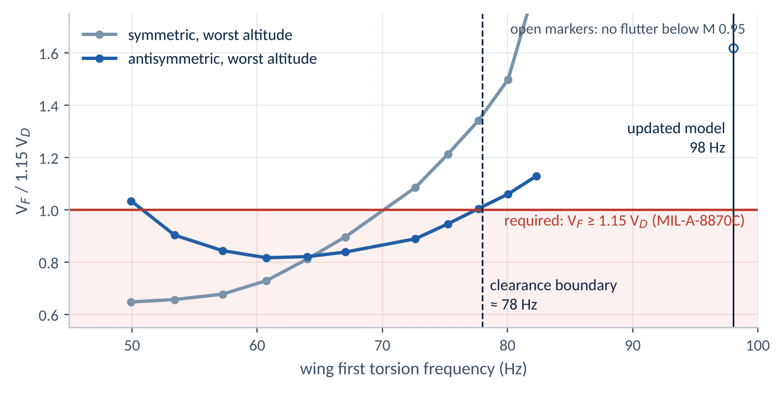<figcaption><b>Fig 1.1</b> Store configuration, no structural damping. Below about 78 Hz the antisymmetric case (wing roll coupled with store pitch) falls under 1.15 V<sub>D</sub>. The symmetric case is critical only below 70 Hz.</figcaption></figure>
    <figure>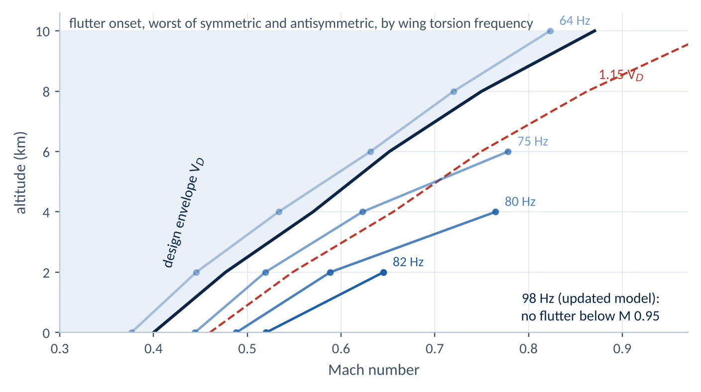<figcaption><b>Fig 1.2</b> Clearance plot. At 64 Hz torsion, flutter onset lies inside the design envelope. At 82 Hz it lies outside 1.15 V<sub>D</sub>. At 98 Hz there is no onset below M 0.95.</figcaption></figure>
    <figure>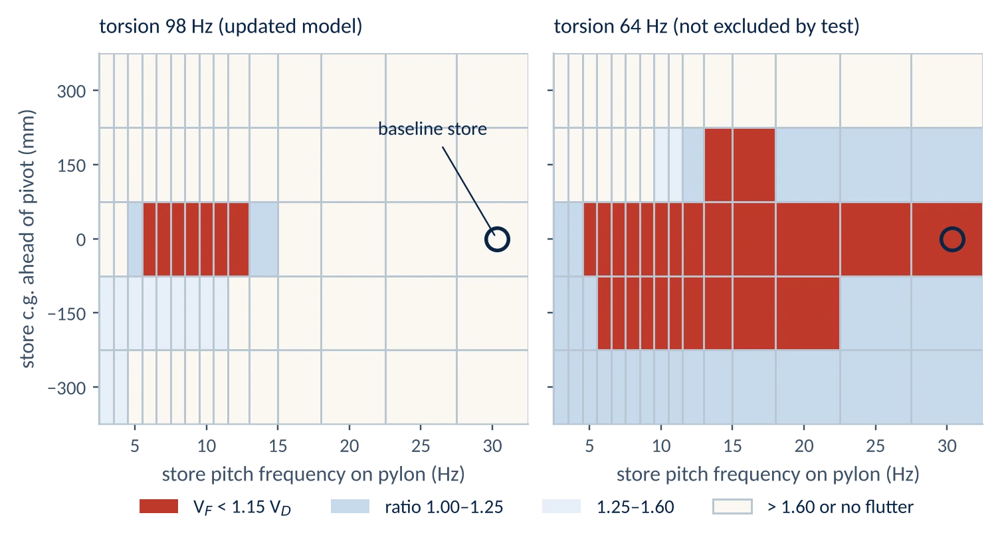<figcaption><b>Fig 1.3</b> Clearance chart for a 150 kg store at 4 km: margin ratio against store pitch frequency and c.g. position. At 98 Hz torsion only a neutral-c.g. store with a pylon pitch frequency of about 6–12 Hz fails, and the baseline store (circled, 30 Hz) clears. At 64 Hz the neutral-c.g. store fails at every pitch frequency above 5 Hz, including the baseline. Clearing it would need the c.g. moved 300 mm.</figcaption></figure>
  </div></div>

  <div class="sec"><h3><i>1.4</i>Recommendation</h3><div class="body">
    <div class="rec"><h4>Clearance status: conditional</h4><div>
      <p>The store is cleared to 1.15 V<sub>D</sub> on the updated model. The clearance depends on wing torsion being at or above 78 Hz. The GVT bandwidth (4–45 Hz) contains no torsion mode, so this stiffness is not verified by test.</p>
      <p>Before release: extend the GVT to 120 Hz with an offset shaker to excite torsion, or measure torsional stiffness in a ground test. Until then, state the 78 Hz floor as a clearance assumption.</p>
    </div></div>
  </div></div>

  <div class="sec"><h3><i>1.5</i>Assumptions</h3><div class="body">
    <ul class="assume">
      <li><b>Store:</b> hypothetical 150 kg store on a pitch-flexible outboard pylon. Store aerodynamics neglected.</li>
      <li><b>Structural damping:</b> not included, so every flutter speed is conservative.</li>
      <li><b>Control surfaces:</b> not modelled. The mechanism here is store pitch coupling with wing bending and roll at 7–11 Hz. Aileron rotation modes sit well above this band.</li>
      <li><b>Wing model:</b> a reduced plate model built only to reproduce the GVT. It is not a detailed structural model.</li>
    </ul>
  </div></div>

  <details class="more"><summary>Verification: test correlation, benchmarks, convergence and hand checks <small>open</small></summary><div class="more-body">
    <div><h4>Test–model correlation</h4>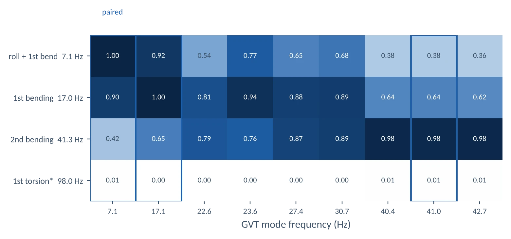<figcaption><b>Fig 1.4</b> Six test modes repeat the wing's first or second bending shape at frequencies the wing alone cannot produce. They are aircraft modes and are excluded from the update objective.</figcaption></div>
    <div><h4>Observability of each updating parameter</h4>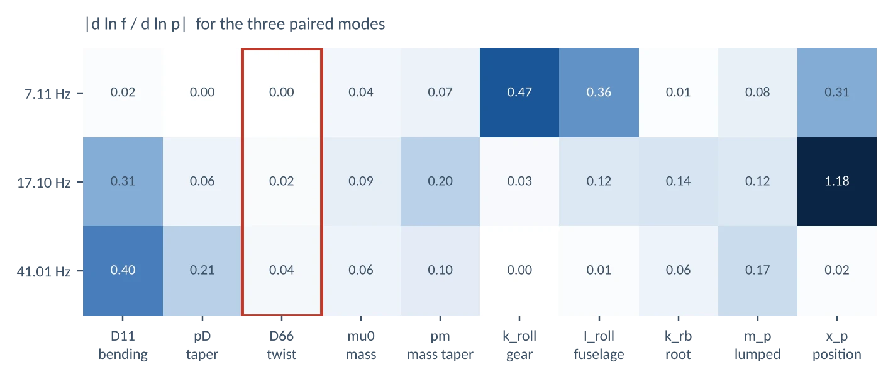<figcaption><b>Fig 1.5</b> |∂ln f / ∂ln p| for the three paired modes. Twisting stiffness (outlined) has no measurable effect.</figcaption></div>
    <div class="tbl"><h4>Benchmarks</h4><table>
      <thead><tr><th>Check</th><th>Reference</th><th>This work</th></tr></thead><tbody>
      <tr><td>DLM influence matrices</td><td>MSC Nastran reference AICs (PanelAero test suite)</td><td><span class="ok">7 of 7 match</span></td></tr>
      <tr><td>Goland wing, strip theory</td><td>Goland 137.2 m/s, 70.7 rad/s; BYU 140 m/s, 69.0 rad/s</td><td class="num">144.7 m/s, 70.0 rad/s</td></tr>
      <tr><td>Goland wing, DLM</td><td>3D tip relief, expected above strip theory</td><td class="num">165.3 m/s</td></tr>
      <tr><td>Typical section, Theodorsen</td><td>Hodges and Pierce parameters</td><td class="num">U<sub>F</sub>/bω<sub>θ</sub> = 2.18</td></tr>
      </tbody></table>
      <p class="note">The Goland strip result sits 3–5% above published values. My beam gives natural frequencies 2–3% below the commonly quoted ones, which points to a difference in how the section inertia is referenced. Frequencies and flutter frequency agree within 1%.</p>
    </div>
    <div>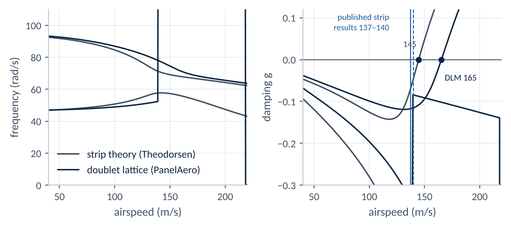<figcaption><b>Fig 1.6</b> Goland wing through the same solver chain.</figcaption></div>
    <div class="tbl"><h4>Convergence</h4><table><thead><tr><th>Model</th><th class="r">V<sub>F</sub> (m/s EAS)</th><th class="r">f<sub>F</sub> (Hz)</th><th class="r">Change</th></tr></thead><tbody><tr><td>6 modes, 160 panels</td><td class="r">118.4</td><td class="r">8.46</td><td class="r">+0.3%</td></tr><tr><td>8 modes, 160 panels (used)</td><td class="r">118.1</td><td class="r">8.46</td><td class="r">+0.0%</td></tr><tr><td>10 modes, 160 panels</td><td class="r">118.1</td><td class="r">8.46</td><td class="r">+0.0%</td></tr><tr><td>12 modes, 160 panels</td><td class="r">118.2</td><td class="r">8.46</td><td class="r">+0.1%</td></tr><tr><td>8 modes, 360 panels</td><td class="r">119.1</td><td class="r">8.46</td><td class="r">+0.9%</td></tr></tbody></table><p class="note">Store configuration, symmetric, 4 km, wing torsion 57 Hz (a case with a flutter crossing).</p></div>
    <div><h4>Hand checks</h4><div class="calc">
      <p class="eq">Store pitch frequency on pylon, uncoupled: f = (1/2π)·√(k/I) = (1/2π)·√(4.0×10⁶ / 110) = 30.3 Hz</p>
      <p class="eq">Requirement at 4 km: 1.15 × V<sub>D</sub> = 1.15 × 151.3 = 174.0 m/s EAS</p>
      <p class="eq">Reduced frequency at the 75 Hz-torsion flutter point: k = ωb/V = 2π × 11.55 × 0.673 / 172.6 = 0.28</p>
      <p class="eq">Wing mass after update: 179.2 kg, against 183.7 kg pre-test estimate (−2.4%)</p>
    </div></div>
    <div>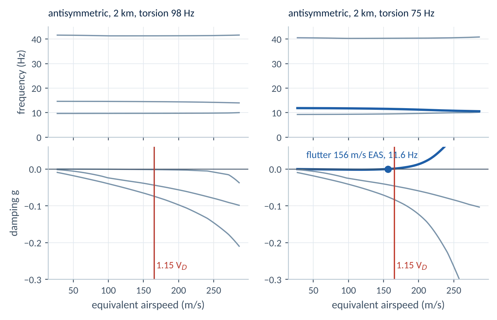<figcaption><b>Fig 1.7</b> Antisymmetric branches at 2 km, tracked with a k-matched p-k. At 98 Hz torsion all branches stay damped. At 75 Hz the roll and store-pitch branch crosses below 1.15 V<sub>D</sub>.</figcaption></div>
  </div></details>
</div></section>

<!-- ================================================================ CASE 2 -->
<section class="band " id="c2"><div class="case wrap">
  <div class="tblock">
    <div class="ttl"><span>Case 2</span><h2>CFD-to-FE load mapping and load-fidelity comparison</h2><p class="tsum">Outcome: six-component balance within 0.28%; hand loads 17% low on torsion; chordwise suction present only in the CFD load.</p></div>
    <dl>
      <dt>Discipline</dt><dd>Aerodynamic loads, static strength</dd>
      <dt>Condition</dt><dd>Rolling pull-out, M 0.40, α 8°, 4 km ISA, pb/2V 0.05</dd>
      <dt>Models</dt><dd>Euler CFD, 152,549 tetrahedra; wing box, 3,004 grids</dd>
      <dt>Structure</dt><dd>Sub-scale wing, NACA 2414, 500 mm semi-span, taper 0.6</dd>
      <dt>Tools</dt><dd>PyFR, PanelAero VLM, CalculiX (Nastran SOL 101 deck)</dd>
          <dt>Programme link</dt><dd>Store carriage loads: mapping tool, forces ~0.001%, flight test 3–5%</dd>
    </dl>
  </div>

  <div class="sec"><h3><i>2.1</i>Objective</h3><div class="body">
    <p>Map CFD surface pressures onto a structural model with full force and moment balance, and show which structural quantities change when the load comes from CFD instead of a hand load or a panel method.</p>
    <p>This is a deliberately simple flight case on a sub-scale wing, chosen so every step can be shown. The same mapping approach is used on programme store carriage cases, where loads are far more complex.</p>
  </div></div>

  <div class="sec"><h3><i>2.2</i>Approach</h3><div class="wide">
    <ol class="flow" data-flow>
      <li><div class="st"><b>Euler CFD</b><span>steady roll, PyFR</span></div><div class="ck">C<sub>Z</sub> converged to 0.04%</div></li>
      <li><div class="st"><b>Pressure mapping</b><span>to 2,645 skin grids</span></div><div class="ck">6-component balance ≤ 0.28%</div></li>
      <li><div class="st"><b>Independent check</b><span>VLM with roll rate</span></div><div class="ck">normal force within 1.3%</div></li>
      <li><div class="st"><b>Three load cases</b><span>hand, panel method, CFD, same lift</span></div><div class="ck">Σ F<sub>z</sub> = 407.5 N each</div></li>
      <li><div class="st"><b>Linear static</b><span>CalculiX, shells</span></div><div class="ck">deck read as Nastran BDF</div></li>
      <li><div class="st"><b>Comparison</b><span>bending, torsion, spars</span></div><div class="ck"></div></li>
    </ol>
  </div></div>

  <div class="sec"><h3><i>2.3</i>Results</h3><div class="wide">
    <div class="key">
      <div><b>0.28%</b><span>largest load balance error (pitching moment)</span></div>
      <div class="bad"><b>−17%</b><span>torsion from the hand load</span></div>
      <div><b>−33.4 N</b><span>chordwise suction force, present only in the CFD load</span></div>
    </div>
    <figure>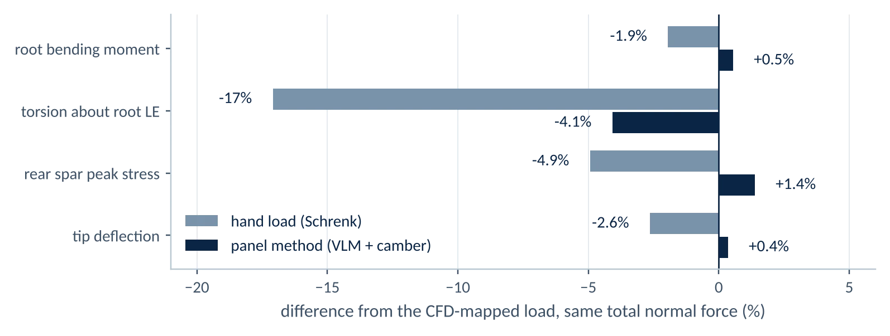<figcaption><b>Fig 2.1</b> Same total normal force in all three cases. The panel method with camber matches CFD within 4.1% on every quantity shown. The hand load (Schrenk distribution at the quarter chord) is close on bending but 17% low on torsion.</figcaption></figure>
    <div>
      <figure>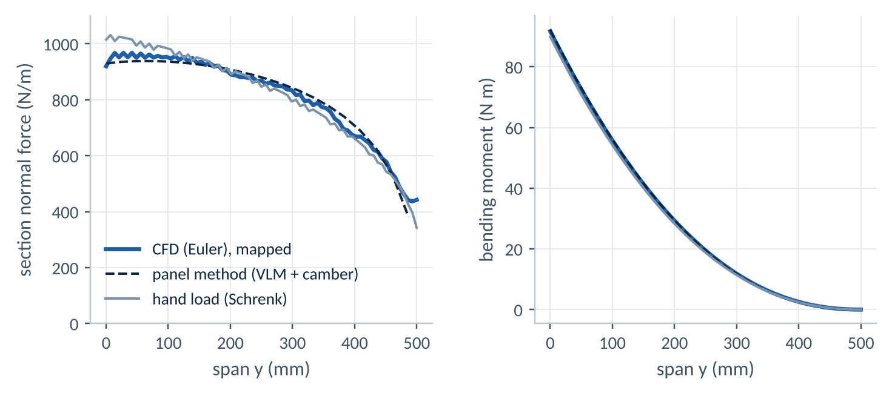<figcaption><b>Fig 2.2</b> The roll rate moves load outboard. CFD and the panel method capture it; the symmetric Schrenk shape does not.</figcaption></figure>
      <figure>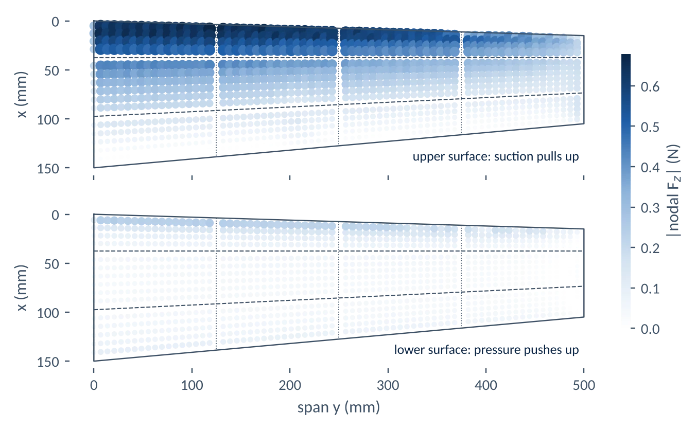<figcaption><b>Fig 2.3</b> Mapped nodal forces. 54% of the lift acts ahead of the front spar, mostly as leading-edge suction.</figcaption></figure>
    </div>
  </div></div>

  <div class="sec"><h3><i>2.4</i>Recommendation</h3><div class="body">
    <div class="rec"><h4>Load source by component</h4><div>
      <ul>
        <li>Spar caps and skins: hand or panel-method loads are adequate (bending within 2%).</li>
        <li>Ribs, rear spar web and torsion-reacting fittings: panel method with camber, or CFD (hand loads 17% low).</li>
        <li>Front spar in-plane bending and drag-direction fittings: CFD only. The chordwise suction force is 8% of the normal force and is absent from both simpler methods.</li>
      </ul>
    </div></div>
  </div></div>

  <div class="sec"><h3><i>2.5</i>Assumptions</h3><div class="body">
    <ul class="assume"><li><b>Inviscid flow:</b> acceptable for loads at α 8°. Not valid for buffet or stall.</li><li><b>Structure:</b> sub-scale wing box, linear static; skin buckling not assessed.</li></ul>
  </div></div>

  <details class="more"><summary>Verification: load balance, hand checks and stress results <small>open</small></summary><div class="more-body">
    <div class="tbl"><h4>Load balance, right wing, about the root leading edge</h4><table>
      <thead><tr><th>Component</th><th class="r">CFD integrated</th><th class="r">FE nodal total</th><th class="r">Error</th></tr></thead><tbody>
      <tr><td>F<sub>x</sub> (N)</td><td class="r">−33.373</td><td class="r">−33.373</td><td class="r">0.000%</td></tr>
      <tr><td>F<sub>y</sub> (N)</td><td class="r">6.855</td><td class="r">6.855</td><td class="r">0.000%</td></tr>
      <tr><td>F<sub>z</sub> (N)</td><td class="r">407.486</td><td class="r">407.486</td><td class="r">0.000%</td></tr>
      <tr><td>M<sub>x</sub> (N m)</td><td class="r">91.712</td><td class="r">91.712</td><td class="r">0.001%</td></tr>
      <tr><td>M<sub>y</sub> (N m)</td><td class="r">−18.482</td><td class="r">−18.431</td><td class="r">0.276%</td></tr>
      <tr><td>M<sub>z</sub> (N m)</td><td class="r">7.566</td><td class="r">7.565</td><td class="r">0.013%</td></tr>
      </tbody></table><p class="note">The 0.28% in pitching moment comes from lumping the leading-edge suction peak onto discrete grids.</p></div>
    <div><h4>Hand checks</h4><div class="calc">
      <p class="eq">Dynamic pressure, M 0.40 at 4 km: q = 0.7 p M² = 0.7 × 61,640 × 0.16 = 6,904 Pa</p>
      <p class="eq">Normal force: q S C<sub>N</sub> = 6,904 × 0.060 × 0.984 = 407.6 N, against 407.5 N mapped <span class="ok">0.03%</span></p>
      <p class="eq">Root bending, elliptic loading: F<sub>z</sub> × 4s/3π = 407.5 × 0.212 = 86.5 N m. CFD: 91.7 N m. The CFD centre of lift is at 0.225 m, 6% further outboard, from the roll rate.</p>
    </div></div>
    <div class="tbl"><h4>Results by load case</h4><table>
      <thead><tr><th>Quantity</th><th class="r">Hand load</th><th class="r">Panel method</th><th class="r">CFD</th></tr></thead><tbody>
      <tr><td>Root bending moment M<sub>x</sub> (N m)</td><td class="r">89.9</td><td class="r">92.2</td><td class="r">91.7</td></tr><tr><td>Torsion about root LE M<sub>y</sub> (N m)</td><td class="r">15.28</td><td class="r">17.68</td><td class="r">18.43</td></tr><tr><td>Chordwise force F<sub>x</sub> (N)</td><td class="r">0.0</td><td class="r">0.0</td><td class="r">-33.4</td></tr><tr><td>Tip deflection (mm)</td><td class="r">4.07</td><td class="r">4.19</td><td class="r">4.18</td></tr><tr><td>Front spar peak von Mises (MPa)</td><td class="r">44.5</td><td class="r">43.9</td><td class="r">43.9</td></tr><tr><td>Rear spar peak von Mises (MPa)</td><td class="r">28.2</td><td class="r">30.1</td><td class="r">29.7</td></tr><tr><td>Skin peak von Mises (MPa)</td><td class="r">39.9</td><td class="r">40.3</td><td class="r">40.2</td></tr>
      </tbody></table></div>
    <div>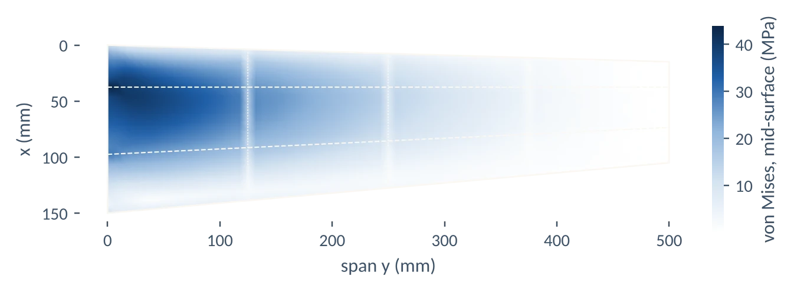<figcaption><b>Fig 2.4</b> Upper skin, mid-surface von Mises stress under the CFD load. 44 MPa peak at the root on the front-spar line.</figcaption></div>
  </div></details>
</div></section>

<!-- ================================================================ CASE 3 -->
<section class="band blue" id="c3"><div class="case wrap">
  <div class="tblock">
    <div class="ttl"><span>Case 3</span><h2>Vibration qualification of a helicopter EO/IR turret mount</h2><p class="tsum">Outcome: isolators retuned off the 12.5 Hz gun rate; safe life 7,184 h to 9,050 h; sway 12.4 mm to 9.5 mm.</p></div>
    <dl>
      <dt>Discipline</dt><dd>Vibration, shock, isolator design, fatigue</dd>
      <dt>Standard</dt><dd>MIL-STD-810H 514.8 Annex D Cat. 14; 519.8 gunfire</dd>
      <dt>Item</dt><dd>45 kg chin turret, 4 elastomeric pads, 7075-T651 bracket</dd>
      <dt>Life</dt><dd>3,000 flight hours, scatter factor 4</dd>
      <dt>Tools</dt><dd>Python plate–beam FE, modal FRF, Newmark-β, rainflow (SOL 111/112 equivalent)</dd>
          <dt>Programme link</dt><dd>Helicopter equipment mounts, gunfire vibration, MIL-STD-810H</dd>
    </dl>
  </div>

  <div class="sec"><h3><i>3.1</i>Objective</h3><div class="body">
    <p>Select isolator stiffness for a chin-mounted turret exposed to rotor harmonics and 20 mm gunfire, and show the bracket survives 3,000 hours with sway inside a 15 mm clearance.</p>
  </div></div>

  <div class="sec"><h3><i>3.2</i>Approach</h3><div class="wide">
    <ol class="flow" data-flow>
      <li><div class="st"><b>Environments</b><span>rotor tones, broadband, gunfire burst</span></div><div class="ck">per 514.8 and 519.8</div></li>
      <li><div class="st"><b>FE model</b><span>plate, beams, rigid turret, pads</span></div><div class="ck">mesh: modes within 0.002%</div></li>
      <li><div class="st"><b>Keep-out map</b><span>1,225 pad stiffness pairs against rotor and gun lines</span></div><div class="ck">≥ 16.6% rotor, ≥ 14.1% gun</div></li>
      <li><div class="st"><b>Response</b><span>random, sine-on-random, gunfire transient</span></div><div class="ck">Parseval 0.0002%, Δt halving 0.32%</div></li>
      <li><div class="st"><b>Fatigue</b><span>rainflow, Dirlik and Steinberg compared</span></div><div class="ck">Dirlik within 17% of rainflow</div></li>
      <li><div class="st"><b>Qualification</b><span>life, sway, strength</span></div><div class="ck">all margins positive</div></li>
    </ol>
  </div></div>

  <div class="sec"><h3><i>3.3</i>Results</h3><div class="wide">
    <div class="key">
      <div class="bad"><b>0.6%</b><span>first design: bounce mode to 12.5 Hz gun rate</span></div>
      <div><b>9,050 h</b><span>safe life after retuning, from 7,184 h</span></div>
      <div><b>9.5 mm</b><span>peak sway against 15 mm clearance, from 12.4 mm</span></div>
    </div>
    <p>The first iteration placed all six isolation modes clear of the rotor tones. The gun firing rate was then added to the keep-out list. The first design's bounce mode sat on the 12.5 Hz firing fundamental, which amplified it 4.65 times and made gunfire 74% of the lifetime fatigue damage. Retuned pads (70 kN/m radial, 100 kN/m axial) move every mode clear of both.</p>
    <figure>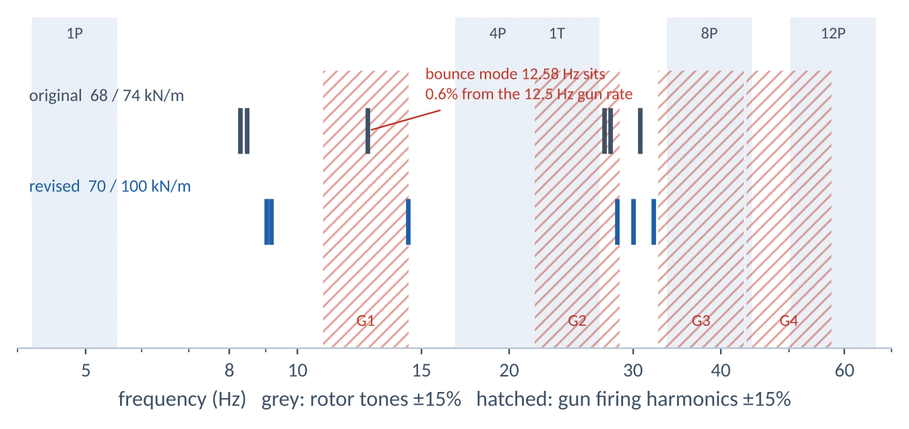<figcaption><b>Fig 3.1</b> Isolation modes against ±15% bands on rotor tones (shaded) and gun harmonics (hatched).</figcaption></figure>
    <div>
      <figure>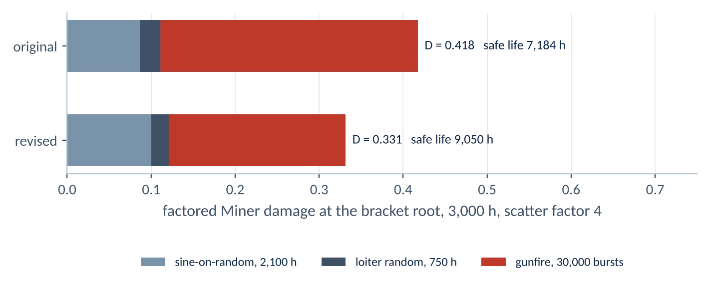<figcaption><b>Fig 3.2</b> 3,000-hour factored damage at the bracket root. Gunfire damage falls by 31%.</figcaption></figure>
      <figure>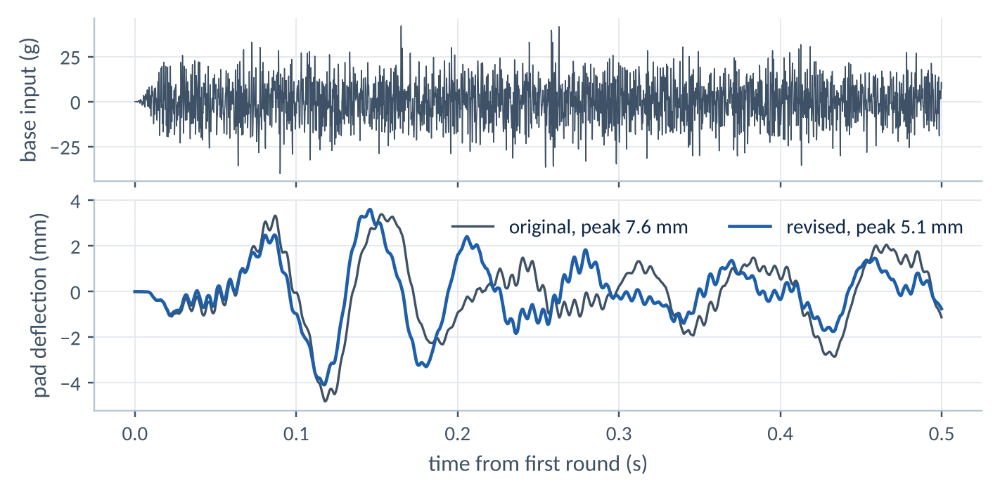<figcaption><b>Fig 3.3</b> Gunfire burst (44 g peak) and vertical pad deflection: 7.6 mm to 5.1 mm.</figcaption></figure>
    </div>
  </div></div>

  <div class="sec"><h3><i>3.4</i>Recommendation</h3><div class="body">
    <div class="rec"><h4>Adopt revised pads, subject to sensor acceptance</h4><div>
      <p>The revised pads raise safe life by 26% and reduce sway by 24%. Broadband turret vibration rises from 0.35 to 0.43 g<sub>rms</sub>. If the gimbal stabilisation accepts 0.43 g<sub>rms</sub>, adopt the revised pads. If not, keep the original stiffness and specify a gun-rate notch requirement to the pad supplier.</p>
    </div></div>
  </div></div>

  <div class="sec"><h3><i>3.5</i>Assumptions</h3><div class="body">
    <ul class="assume"><li><b>Environment:</b> tone amplitudes from the 514.8 Annex D envelope and a gunfire history synthesised per 519.8 Annex C, to be replaced by flight and firing data.</li><li><b>Fatigue curve:</b> MIL-HDBK-5J notched (K<sub>t</sub> = 2.0) 7075-T6 curve, written in local stress. Nominal stress is multiplied by K<sub>t</sub> once, then entered into the local curve.</li></ul>
  </div></div>

  <details class="more"><summary>Verification: hand checks, convergence and method comparison <small>open</small></summary><div class="more-body">
    <div class="tbl"><h4>Verification checks</h4><table>
      <thead><tr><th>Check</th><th>Method</th><th class="r">Difference</th></tr></thead><tbody>
      <tr><td>Vertical isolation mode</td><td>Rigid body on four springs</td><td class="r">2.62%</td></tr>
      <tr><td>Bracket first mode</td><td>Closed-form cantilever</td><td class="r">1.51%</td></tr>
      <tr><td>Peak transmissibility</td><td>Single-DOF closed form</td><td class="r">2.89%</td></tr>
      <tr><td>1 g reactions</td><td>Weight against bolt loads</td><td class="r">&lt; 10<sup>−9</sup>%</td></tr>
      <tr><td>Random stress RMS</td><td>Frequency domain against IFFT time history</td><td class="r">0.0002%</td></tr>
      <tr><td>Gunfire peak stress</td><td>Time step 50 µs against 25 µs</td><td class="r">0.32%</td></tr>
      <tr><td>Reproducibility</td><td>Original design rerun from script</td><td class="r">identical, D = 0.4176</td></tr>
      </tbody></table></div>
    <div class="tbl"><h4>Mesh convergence</h4><table>
      <thead><tr><th>Mesh</th><th class="r">DOF</th><th class="r">f<sub>1</sub> (Hz)</th><th class="r">f<sub>3</sub> (Hz)</th><th class="r">f<sub>6</sub> (Hz)</th><th class="r">f<sub>7</sub> bracket (Hz)</th><th class="r">1 g stress (MPa)</th></tr></thead><tbody>
      <tr><td>Coarse</td><td class="r">342</td><td class="r">8.2874</td><td class="r">12.5799</td><td class="r">30.6946</td><td class="r">150.125</td><td class="r">21.312</td></tr>
      <tr><td>Medium</td><td class="r">1,176</td><td class="r">8.2870</td><td class="r">12.5790</td><td class="r">30.6945</td><td class="r">148.912</td><td class="r">21.237</td></tr>
      <tr><td>Fine</td><td class="r">2,514</td><td class="r">8.2869</td><td class="r">12.5787</td><td class="r">30.6945</td><td class="r">148.603</td><td class="r">21.227</td></tr>
      </tbody></table></div>
    <div><h4>Hand checks</h4><div class="calc">
      <p class="eq">Vertical bounce, uncoupled: f = (1/2π)·√(4k<sub>z</sub>/m) = (1/2π)·√(4 × 74,000 / 45) = 12.91 Hz. FE, coupled with pitch through the 40 mm c.g. offset: 12.58 Hz.</p>
      <p class="eq">Pitch–translation coupling from the 180 mm overhang: κ = 4k<sub>x</sub>z / √(K<sub>xx</sub>K<sub>θθ</sub>) = 0.69, which splits 12.4 Hz and 26.1 Hz into 8.3 Hz and 27.8 Hz.</p>
      <p class="eq">Peak transmissibility, hysteretic damping η = 0.20: T = √(1+η²)/η = 5.10. FE: 4.96.</p>
    </div></div>
    <div class="pair">
      <figure>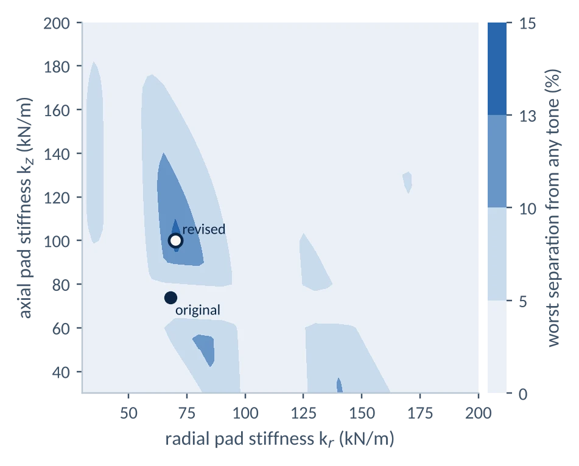<figcaption><b>Fig 3.4</b> Worst separation from any rotor or gun line. No stiffness pair clears all lines by 15%; the revised point is the best available.</figcaption></figure>
      <figure>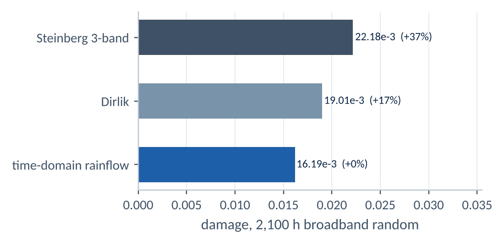<figcaption><b>Fig 3.5</b> Steinberg overstates damage by 37% because the stress response is bimodal (α<sub>2</sub> = 0.63).</figcaption></figure>
    </div>
  </div></details>
</div></section>

<!-- ================================================================ CASE 4 -->
<section class="band " id="c4"><div class="case wrap">
  <div class="tblock">
    <div class="ttl"><span>Case 4</span><h2>Machining distortion of a 7075-T651 H-beam</h2><p class="tsum">Outcome: 28 µm final form; the 81 µm in-process bow sets the Op20 datums; centring the web saves 26%.</p></div>
    <dl>
      <dt>Discipline</dt><dd>Residual stress, machining distortion</dd>
      <dt>Part</dt><dd>600 mm H-beam from 100 mm plate, 69% removed</dd>
      <dt>Model</dt><dd>173,099 nodes, C3D10, 15 load steps</dd>
      <dt>Process</dt><dd>Op10 top pocket, Op20 bottom pocket, Op30 drilling</dd>
      <dt>Tools</dt><dd>gmsh, CalculiX (ANSYS element birth and death equivalent)</dd>
          <dt>Programme link</dt><dd>ANSYS five-block distortion chain for a 7075 U-channel</dd>
    </dl>
  </div>

  <div class="sec"><h3><i>4.1</i>Objective</h3><div class="body">
    <p>Predict the distortion of a thin-walled part between and after machining operations from the plate residual stress, and identify the design and fixturing levers.</p>
  </div></div>

  <div class="sec"><h3><i>4.2</i>Approach</h3><div class="wide">
    <ol class="flow" data-flow>
      <li><div class="st"><b>CAD and partition</b><span>one conformal layer per machining pass</span></div><div class="ck">volumes checked per layer</div></li>
      <li><div class="st"><b>Residual stress</b><span>plate profile at every integration point</span></div><div class="ck">zero net force and moment</div></li>
      <li><div class="st"><b>Element removal</b><span>15 static steps with clamp changes</span></div><div class="ck">closed form within 0.10%</div></li>
      <li><div class="st"><b>Best fit</b><span>CMM-style form deviation</span></div><div class="ck">mesh: 1.0% on peak</div></li>
      <li><div class="st"><b>Levers</b><span>clamping and web position</span></div><div class="ck"></div></li>
    </ol>
  </div></div>

  <div class="sec"><h3><i>4.3</i>Results</h3><div class="wide">
    <div class="key">
      <div class="bad"><b>81 µm</b><span>bow after Op10 unclamp, presented to Op20</span></div>
      <div><b>28 µm</b><span>final peak form deviation</span></div>
      <div><b>−26%</b><span>final deviation with the web centred</span></div>
    </div>
    <div class="pair">
      <figure>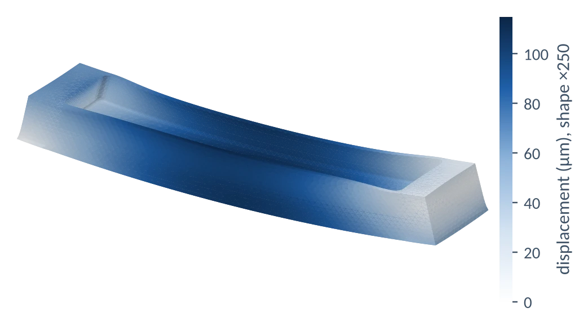<figcaption><b>Fig 4.1</b> After Op10 and unclamping: 115 µm peak displacement, bowing along the length.</figcaption></figure>
      <figure>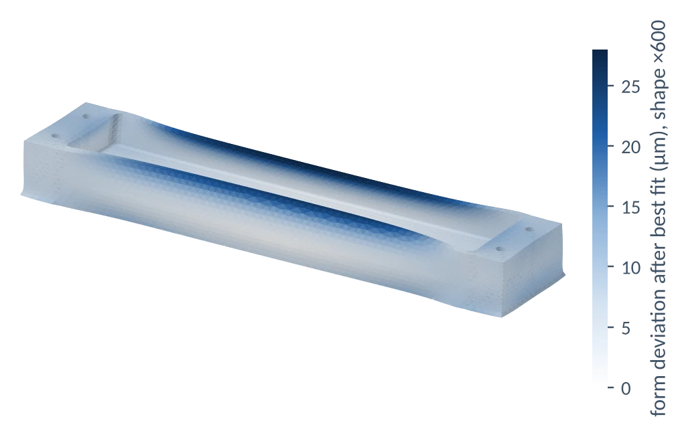<figcaption><b>Fig 4.2</b> Finished part after best fit. The peak is flange-tip lean at the thin end of the tapered flange.</figcaption></figure>
    </div>
    <figure>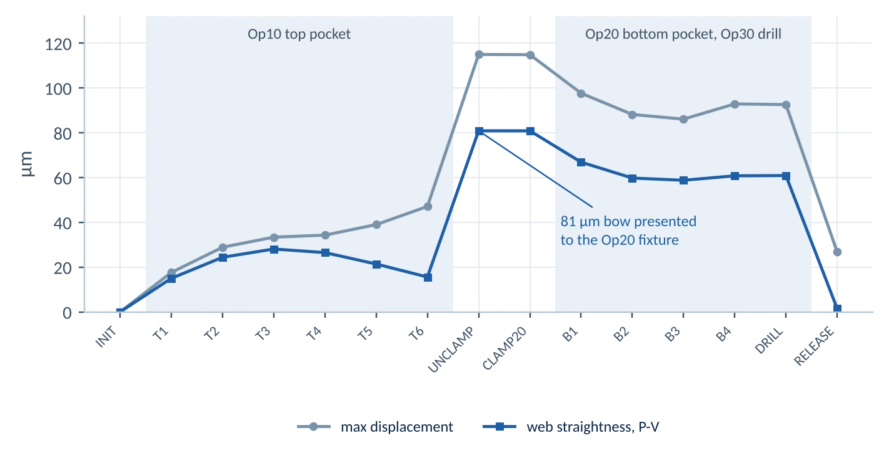<figcaption><b>Fig 4.3</b> Distortion through the 15 steps. The part moves under 0.05 mm while clamped in Op10 and jumps on release.</figcaption></figure>
  </div></div>

  <div class="sec"><h3><i>4.4</i>Recommendation</h3><div class="body">
    <div class="rec"><h4>Process plan</h4><div>
      <ul>
        <li>Set Op20 datums and floor thickness for an 81 µm bow.</li>
        <li>Clamping the bowed part flat in Op20 does not change the final shape (0.2 µm), because the bosses are stiff.</li>
        <li>If the drawing allows, centre the web on the plate mid-plane: peak deviation 28.2 to 20.8 µm.</li>
      </ul>
    </div></div>
  </div></div>

  <div class="sec"><h3><i>4.5</i>Assumptions</h3><div class="body">
    <ul class="assume"><li><b>Residual stress:</b> generic stretched-plate profile, −24 MPa surface and +12 MPa core. The model is linear, so results scale directly with a measured profile for the plate lot.</li><li><b>Process:</b> linear elastic, rigid clamps, no machining-induced surface stress.</li></ul>
  </div></div>

  <details class="more"><summary>Verification: closed form, path independence, mesh convergence and sensitivity <small>open</small></summary><div class="more-body">
    <div class="tbl"><h4>Element removal against closed form</h4><table>
      <thead><tr><th>Mesh size</th><th class="r">Nodes</th><th class="r">w″ FE (1/mm)</th><th class="r">w″ closed form</th><th class="r">Difference</th></tr></thead><tbody>
      <tr><td>5.0 mm</td><td class="r">11,421</td><td class="r">2.6886×10⁻⁵</td><td class="r">2.6912×10⁻⁵</td><td class="r">−0.10%</td></tr>
      <tr><td>3.5 mm</td><td class="r">32,632</td><td class="r">2.6887×10⁻⁵</td><td class="r">2.6912×10⁻⁵</td><td class="r">−0.09%</td></tr>
      <tr><td>2.5 mm</td><td class="r">79,871</td><td class="r">2.6895×10⁻⁵</td><td class="r">2.6912×10⁻⁵</td><td class="r">−0.06%</td></tr>
      </tbody></table><p class="note">200 × 40 × 20 mm plate with the same stress profile, top 8 mm removed. Closed form for an equibiaxial free plate: w″ = 12(1−ν)M / (E a³).</p></div>
    <div class="tbl"><h4>Mesh convergence and path independence</h4><table>
      <thead><tr><th>Run</th><th class="r">Nodes</th><th class="r">Peak form deviation</th><th class="r">Flange A lean</th><th class="r">Web straightness</th></tr></thead><tbody>
      <tr><td>M1, 15 steps</td><td class="r">173,099</td><td class="r">28.2 µm</td><td class="r">22.5 µm</td><td class="r">1.5 µm</td></tr>
      <tr><td>M1, one-shot removal</td><td class="r">173,099</td><td class="r">28.0 µm</td><td class="r">22.7 µm</td><td class="r">1.3 µm</td></tr>
      <tr><td>M2, one-shot</td><td class="r">246,341</td><td class="r">28.3 µm</td><td class="r">22.4 µm</td><td class="r">1.4 µm</td></tr>
      <tr><td>M3, one-shot</td><td class="r">399,345</td><td class="r">28.3 µm</td><td class="r">22.5 µm</td><td class="r">1.3 µm</td></tr>
      </tbody></table><p class="note">With free-state clamping, linear superposition requires the final shape to be independent of removal order. The 15-step and one-shot runs agree within 1.5 µm at every node.</p></div>
    <div class="tbl"><h4>Sensitivity</h4><table>
      <thead><tr><th>Case</th><th class="r">Peak form deviation</th><th class="r">Flange A lean</th><th class="r">Web straightness</th></tr></thead><tbody>
      <tr><td>Baseline: offset web, free Op20 clamp</td><td class="r">28.2 µm</td><td class="r">22.5 µm</td><td class="r">1.5 µm</td></tr>
      <tr><td>Part forced flat in Op20</td><td class="r">28.0 µm</td><td class="r">22.7 µm</td><td class="r">1.4 µm</td></tr>
      <tr><td>Web centred on plate mid-plane</td><td class="r">20.8 µm</td><td class="r">13.8 µm</td><td class="r">5.3 µm</td></tr>
      </tbody></table></div>
  </div></details>
</div></section>
</main>

<footer class="foot"><div class="wrap">
  <span>Bharath · Senior FEA Engineer · Bengaluru · bharath31015r@gmail.com</span>
  <span>Hawk GVT data: University of Sheffield, doi:10.15131/shef.data.22710040, CC BY 4.0</span>
</div></footer>

<script>
const FLAG = {"sensors": [[0.0, 1.045], [0.681, 1.612], [1.362, 1.15], [1.893, 1.012], [2.624, 0.787], [3.405, 0.592], [3.855, 0.485], [0.573, 1.436], [0.216, 1.188], [0.393, 1.07], [0.811, 1.015], [1.025, 1.115], [0.865, 1.294], [0.0, 0.175], [0.0, 0.73], [0.0, 1.33], [0.0, 1.985], [0.0, 0.415], [0.681, 0.448], [1.362, 0.45], [1.893, 0.404], [2.624, 0.308], [3.405, 0.225], [4.035, 0.139], [-0.07, 1.455], [0.681, 1.232], [1.362, 1.055], [2.043, 0.882], [2.724, 0.705], [3.404, 0.542], [3.897, 0.471], [-0.007, 2.115], [0.681, 1.788], [1.362, 1.529], [2.043, 1.274], [2.724, 1.015], [3.404, 0.781], [3.738, 0.62], [-0.037, 0.462], [-0.087, 1.124], [-0.057, 1.785], [-0.072, 0.793], [0.681, 0.676], [1.362, 0.581], [2.043, 0.489], [2.724, 0.394], [3.404, 0.304], [4.035, 0.297], [-0.007, 0.131], [0.681, 0.12], [1.362, 0.107], [2.043, 0.096], [2.724, 0.083], [3.404, 0.067], [4.074, 0.05]], "names": ["LLC-01", "LLC-02", "LLC-03", "LLC-04", "LLC-05", "LLC-06", "LLC-07", "LLG-01", "LLG-02", "LLG-03", "LLG-04", "LLG-05", "LLG-06", "LRT-01", "LRT-02", "LRT-03", "LRT-04", "LTC-01", "LTC-02", "LTC-03", "LTC-04", "LTC-05", "LTC-06", "LTC-07", "ULC-01", "ULC-02", "ULC-03", "ULC-04", "ULC-05", "ULC-06", "ULC-07", "ULE-01", "ULE-02", "ULE-03", "ULE-04", "ULE-05", "ULE-06", "ULE-07", "URT-01", "URT-02", "URT-03", "UTC-01", "UTC-02", "UTC-03", "UTC-04", "UTC-05", "UTC-06", "UTC-07", "UTE-01", "UTE-02", "UTE-03", "UTE-04", "UTE-05", "UTE-06", "UTE-07"], "modes": [[0.14639334216320687, 0.27926631997308055, 0.3947759401349192, 0.5147931299272647, 0.6886932355876332, 0.857457575282562, 0.9495581138402422, 0.26251807516653014, 0.17312797224646034, 0.21640936318388723, 0.2803011076780377, 0.3346076177601783, 0.29428768227121, 0.1368643132021135, 0.1416031377958557, 0.14721432476557367, 0.13624010050290897, 0.13652746924710757, 0.261890846143103, 0.39568903640518394, 0.5147969177597541, 0.6858423891182069, 0.8653448313438297, 1.0, 0.16143538690807205, 0.28220952080801476, 0.40355209123293106, 0.5481821677218232, 0.7139339136549209, 0.8713960578388396, 0.9551209758364446, 0.19899981599176125, 0.2698776805965845, 0.3928460438108491, 0.5242899286231035, 0.6899111699349622, 0.839731666468305, 0.9173622026352595, 0.13321129313050092, 0.13890173338155234, 0.1676730779936237, 0.1293621957343757, 0.27138468538879756, 0.3987917691668248, 0.5403387422886846, 0.7120225825131337, 0.8679403260372522, 0.9556851185522388, 0.12036678436219718, 0.2460792950947733, 0.392507392663516, 0.5330904902799986, 0.6903549918087267, 0.8557825186627215, 0.9670482793834951], [-0.008984671465976283, 0.03439321611106665, 0.14616627243530692, 0.26098242282461886, 0.47962189964307583, 0.7452560857624748, 0.9054393647053566, 0.025625889734016284, 0.0014009258015264124, 0.015366166977075369, 0.055098398074874246, 0.0918349021208773, 0.06096552864785131, -0.01843563159394334, -0.01460128703801624, -0.01434747230472424, -0.018573759410975742, -0.016590628323050017, 0.05395250229601622, 0.16472245552062278, 0.2836219102438659, 0.5002296807791243, 0.7602512010309588, 1.0, -0.024116342966238432, 0.046580686536326014, 0.14999758442041156, 0.30023771569831714, 0.5134068317541002, 0.7476821191646476, 0.85733704903758, -0.02572263774980031, 0.03114426455849255, 0.12447273431327636, 0.2631449470519199, 0.4681768961941118, 0.6866568068256097, 0.8135638469163692, -0.02385537866315159, -0.02064814063333226, -0.025951195435658127, -0.02056844850135301, 0.05141592198580627, 0.1635364920827099, 0.31830797347372214, 0.5282939470668506, 0.7646501869443548, 0.8873506015267582, -0.028110646073943448, 0.05133171685192591, 0.1675052639911952, 0.33246031757460753, 0.5356718593256028, 0.768433704106481, 0.9238916326352593], [-0.24045980244858686, -0.23629061659953493, -0.11002117500505747, 0.011376868140144773, 0.28078688615482306, 0.6262955154908789, 0.8603115338730242, -0.2347930358229059, -0.23506505336681227, -0.2260587093231947, -0.19130132004296088, -0.1642230407533312, -0.21506004068021145, -0.19247518058171242, -0.22113581371577207, -0.26129131833335817, -0.22279057410617203, -0.2028071543158982, -0.14191148909119458, -0.04034407266663502, 0.08599943588826686, 0.35330950376836734, 0.6976818679545408, 1.0, -0.27997461188833817, -0.20836719792345446, -0.09796320370629394, 0.06636689397477225, 0.3363053534833961, 0.6511561072408579, 0.854669059404661, -0.266443249548999, -0.2293853252787469, -0.13514424419580698, 0.018843608045299266, 0.28345540634180993, 0.5846053857497825, 0.7690021765797883, -0.1977490489616492, -0.247528391715052, -0.2746625460734861, -0.2279759651905612, -0.16301568655883214, -0.051707400882522674, 0.12053875620839204, 0.3799960609852225, 0.6828061462007755, 0.9107296748794518, -0.17155280752056742, -0.115501922651783, -0.006000613150531492, 0.16914128726396166, 0.41779665878978256, 0.7085493226994158, 0.9580648139068851], [0.049007752658648734, 0.09661196677824145, -0.015991312883644398, -0.12092252339029246, -0.3637401505199603, -0.6769395631616355, -0.8846156486885444, 0.127410180929672, 0.05331023703363476, 0.06231416924724582, 0.0439907584245048, 0.03462269821827923, 0.06730349936433702, 0.03499501150093276, 0.05213596827164006, 0.05827537679931761, 0.08279862259963394, 0.04586151656493115, 0.013418905575229605, -0.06421542272422344, -0.17731915081950997, -0.4163649902737341, -0.704748070618922, -1.0, 0.10645310112047597, 0.06959182388162814, -0.007820198192747005, -0.14711847379216922, -0.37375071806138516, -0.6493248226503204, -0.7576831096554321, 0.16996977132465985, 0.16719392294763397, 0.0996604830587727, -0.04289754331300925, -0.24835680826672754, -0.5179392401327764, -0.6494213538719216, 0.04501324378782495, 0.061727294481471004, 0.14027617133333609, 0.04878677725994262, 0.02458874538758852, -0.060353302608951304, -0.2200313021183993, -0.4348298178232424, -0.7181905733880679, -0.7677683984992419, 0.049920346058892, -0.023105787855155532, -0.11241627294806637, -0.2824940517654672, -0.4877654632716813, -0.7601077154463539, -0.8483832746421339], [-0.07798074846068144, -0.16546439887119482, -0.09249362187905891, -0.001664449535674561, 0.2394882056119815, 0.5888715426904668, 0.8225493751155459, -0.1708343854215601, -0.09433422324087794, -0.11145191797574487, -0.1144926586772997, -0.12130165834277247, -0.14914439535836482, -0.0645299669723455, -0.07603922310956411, -0.08396939603916648, -0.12097855853161794, -0.06639320126321163, -0.0725209273166412, -0.01953422309285515, 0.08025924854291973, 0.32317859389602743, 0.6682932499543394, 1.0, -0.12593694372116454, -0.1237746858397096, -0.0767773228398112, 0.049560483599218746, 0.2975309109692433, 0.6112807171549757, 0.8276732947915644, -0.14725546766910394, -0.15581202234797303, -0.10243260590673449, 0.008782994393609092, 0.24634817078821195, 0.5490779877715093, 0.7248818710527428, -0.07469425471589128, -0.08360265459207554, -0.14786860565413676, -0.07477716184819715, -0.08910101837190867, -0.03733949766371206, 0.10090060198442692, 0.3422312017251013, 0.6504399648196908, 0.8717674833581507, -0.07487701063772575, -0.06382614965764365, -0.0009759084501103902, 0.1486379135927286, 0.37780629091475526, 0.6779233957793701, 0.9289371256292636], [-0.02542945081465984, -0.13371781466681074, -0.08793829500186276, -0.009813903169537256, 0.2324055272733182, 0.5849698681137052, 0.8400226642348659, -0.12833993238255156, -0.044033792933424604, -0.058619428507021905, -0.08761047924798426, -0.11083219774814372, -0.130100566718215, 0.005529441030229899, -0.018832799383084044, -0.0358648887273765, -0.06466599150915123, -0.018610395826598358, -0.03733769960633454, -0.005798596016031961, 0.08054411010209411, 0.30790617500228756, 0.6558595217953908, 1.0, -0.0583139795846026, -0.08126690636869176, -0.07847176298446673, 0.03303892569484598, 0.27653539597672194, 0.5981904415487767, 0.7994007899206305, -0.06071226169637333, -0.13437704018341287, -0.13084453750536623, -0.03563736249817491, 0.18491106535066754, 0.4980321018372754, 0.6925362815753022, -0.015113126051238662, -0.02562907211602624, -0.06269139036350675, -0.015566344046514509, -0.04640120945335169, -0.016575628440586392, 0.10291575115248719, 0.33166636918440645, 0.6533651798579306, 0.8669908064665832, -0.00200540383897772, -0.00660658005460173, 0.03813478801109818, 0.16771590465071348, 0.3948745551938372, 0.6949400339196417, 0.918307118653695], [0.05939432834664782, 0.13454425197609574, 0.20474770172909346, 0.18603620292139206, -0.026530336921506834, -0.46382586773659384, -0.7941218830877098, 0.12911814607500993, 0.07183032403470747, 0.10991737149282031, 0.16311242152601593, 0.18599002708955592, 0.17246937307292834, 0.09611716499142878, 0.07107770468314638, 0.046929646595278256, -0.00669010058674496, 0.07507482175496705, 0.16175961556557994, 0.19698434529162584, 0.1550369416664887, -0.08094733091105978, -0.524131142028427, -1.0, 0.0283159967944726, 0.1522018719122402, 0.20307830852537428, 0.1518843711586432, -0.07449373696058068, -0.4769214333645227, -0.7855334769469823, -0.0457686405744018, 0.11140310388093048, 0.19117049303811104, 0.167789955723669, -0.025392164218626757, -0.3978082969023157, -0.647541445199224, 0.06919147839675283, 0.04881698440454048, -0.0029536486965008432, 0.05954343901281145, 0.16018900482429413, 0.1972261160057458, 0.12757722803880445, -0.11264614064159602, -0.5223077355168044, -0.8678964984025657, 0.06924979479480751, 0.16903069671442394, 0.2040888841166108, 0.1090651997514307, -0.14152371246190085, -0.5531187003317674, -0.9370365820479386], [-0.07134675063854044, -0.14103046934224692, -0.20500855547326693, -0.1778216939887787, 0.038053350955528205, 0.46968432218130624, 0.8071599618411132, -0.14650212455528233, -0.08745346911733702, -0.11767219666334396, -0.1654614458837635, -0.19066259482565745, -0.18390861303804049, -0.1013607601470115, -0.07654391770276933, -0.057591200167694416, -0.005624691528732265, -0.08397079110305641, -0.16384341222616872, -0.19892498225888308, -0.14714066393358996, 0.08552472806776865, 0.5306647552545335, 1.0, -0.02497778413395151, -0.15447703716537686, -0.20351736435693166, -0.14785285910545634, 0.08475962358071817, 0.48522320193293567, 0.7965703876316688, 0.03775930923367514, -0.11412659726230573, -0.18675824488586124, -0.16368341076906784, 0.037273112469124535, 0.4072298307471828, 0.6594588344818443, -0.0699535593882881, -0.05820248573650833, 0.00487799298187163, -0.06698647440265898, -0.16274886895981938, -0.19667960242474386, -0.12227768157641052, 0.1200794088953893, 0.5301709352591036, 0.8789153520178886, -0.07589176420562546, -0.17357784897789144, -0.20223925514109609, -0.10431730865790441, 0.14816675994501302, 0.5619476919035246, 0.9526881483054603], [-0.05916314126017002, -0.15316676942424795, -0.2182353158814558, -0.19842699227552357, 0.01120796877351949, 0.45725777281449265, 0.7927177336159774, -0.15724945013378655, -0.06866187320604665, -0.11175137306416819, -0.16590662529636016, -0.19905907499102957, -0.19362585439112176, -0.08998812775498706, -0.06615909457070299, -0.04435046172807918, -0.0024958645269607745, -0.06843719332919354, -0.15852410752292925, -0.19911185402153328, -0.1573282217713075, 0.07336529789837933, 0.5339934665439728, 1.0, -0.02642991966267297, -0.1555721748870291, -0.2088839987922193, -0.16654774518117418, 0.06746591324503047, 0.4772128198114287, 0.8049508369581558, 0.020230520930925616, -0.12485662771924814, -0.19459390861983608, -0.1801779124750607, 0.021830479005308986, 0.4085056225527671, 0.6648952457698605, -0.06314309021406368, -0.047915641440828625, -0.006390546641280296, -0.06007645189209887, -0.16054337468526872, -0.20682648179279078, -0.13798149426336617, 0.1041460160151283, 0.5228000606016595, 0.8873657311440003, -0.07828704703777496, -0.1712903893880739, -0.21108869633144806, -0.12386546640779318, 0.13332956281838293, 0.5538205701753256, 0.9651467321582725]], "freqs": [7.112567990169364, 17.099938556325018, 22.64824028573716, 23.561470744525163, 27.353849307228714, 30.653842708136686, 40.40341083270024, 41.007197831903134, 42.74899057173944], "zeta": [0.024054981439263975, 0.006391043525988861, 0.01381666206842239, 0.013503275375081203, 0.01575598971081989, 0.015311884399992776, 0.008868420220072105, 0.015313241848517276, 0.008001155228260733], "LE": [[-0.007, 2.115], [0.681, 1.788], [1.362, 1.529], [2.043, 1.274], [2.724, 1.015], [3.404, 0.781], [4.05, 0.4]], "TE": [[-0.007, 0.131], [0.681, 0.12], [1.362, 0.107], [2.043, 0.096], [2.724, 0.083], [3.404, 0.067], [4.074, 0.05]], "xcl": -0.9, "torsion": [{"f": 49.93, "SL": 122.50895038099026, "km4": 120.14242447186226, "km6": 118.6492638128607, "km8": 116.54218480577073}, {"f": 53.4, "SL": 122.8787349271064, "km4": 121.77426798232902, "km6": 120.86323111158393, "km8": 119.4000058232082}, {"f": 57.23, "SL": 135.72000599639037, "km4": 136.05108274403108, "km6": 135.63640302411753, "km8": 134.79226901555685}, {"f": 60.74, "SL": 155.38544765997432, "km4": 156.6715127665869, "km6": 156.96525127585772, "km8": 156.48448426048546}, {"f": 63.99, "SL": 177.18019202943975, "km4": 179.6473413894078, "km6": 180.6254135386957, "km8": 179.50544579558053}, {"f": 67.05, "SL": 199.0908106416906, "km4": 203.5384067580727, "km6": 204.5030019852269, "km8": null}, {"f": 72.64, "SL": 242.59704627434897, "km4": null, "km6": null, "km8": null}, {"f": 82.32, "SL": null, "km4": null, "km6": null, "km8": null}, {"f": 98.02, "SL": null, "km4": null, "km6": null, "km8": null}], "req": 173.98058483240655, "req_sl": 156.53523564999668};
const TORS = {"f": [49.93, 53.4, 57.23, 60.74, 63.99, 67.05, 72.64, 75.22, 77.69, 80.05, 82.32, 98.02], "cases": [{"side": "symmetric", "alt": 0, "r": [0.7683481937352972, 0.7307046688123301, 0.7239733223264341, 0.7556141625537678, 0.8180987513269146, 0.9004223617289259, 1.0864674132895389, 1.2130715000547017, 1.3428199858499485, 1.499579549347326, 1.8732996131351258, null]}, {"side": "symmetric", "alt": 2000, "r": [0.7229839519355916, 0.6949497618940177, 0.7005605461605481, 0.7431314711267499, 0.8126879686550506, 0.8976962266338521, 1.141231003658408, 1.312542453166878, 1.6052904033400561, null, null, null]}, {"side": "symmetric", "alt": 4000, "r": [0.6813269836061958, 0.662072608078531, 0.6785947289556955, 0.730224452276573, 0.8136627155894963, 0.9183040605271258, 1.3138647050890082, null, null, null, null, null]}, {"side": "symmetric", "alt": 6000, "r": [0.6746654610672745, 0.6631341110818557, 0.6920705353496531, 0.7619533146450859, 0.8740175958667745, 1.038296790309916, null, null, null, null, null, null]}, {"side": "symmetric", "alt": 8000, "r": [0.6639643878047562, 0.6619770687334051, 0.7065302898985903, 0.8028636751112409, 0.965225129395637, null, null, null, null, null, null, null]}, {"side": "symmetric", "alt": 10000, "r": [0.6489449956507555, 0.6581197418478784, 0.7242066896569274, 0.8495267153788626, null, null, null, null, null, null, null, null]}, {"side": "antisymmetric", "alt": 0, "r": [1.321256832646613, 1.1958457240978593, 1.0769844506728476, 0.993226813346924, 0.9421239215513091, 0.9177996027954907, 0.9328631546765889, 0.9653226735896485, 1.0093110383211876, 1.0613871574561518, 1.130607259908393, null]}, {"side": "antisymmetric", "alt": 2000, "r": [1.2257911284784433, 1.1132231772808872, 1.0060364604989107, 0.9345329811004683, 0.8922131439152914, 0.8756189926758532, 0.9038343186867434, 0.9469862187631979, 1.0058243400419766, 1.0732650525050775, 1.176829259844173, null]}, {"side": "antisymmetric", "alt": 4000, "r": [1.1323793812830827, 1.0337239667724774, 0.9392353071510011, 0.8783487303472491, 0.8463406755057302, 0.8396466855076616, 0.8902792307471641, 0.9499685585876754, 1.0291357273149837, 1.1664132873039303, null, null]}, {"side": "antisymmetric", "alt": 6000, "r": [1.0904386733250704, 1.0023577795823382, 0.9175255975930542, 0.8645929574311995, 0.8425910033942741, 0.8475377619505886, 0.9299023037264402, 1.0383744024182577, null, null, null, null]}, {"side": "antisymmetric", "alt": 8000, "r": [1.0348962428355963, 0.9598186399259416, 0.888063874872954, 0.8472284173792326, 0.834974853475238, 0.8564320795682225, 1.0281421668651267, null, null, null, null, null]}, {"side": "antisymmetric", "alt": 10000, "r": [null, 0.9043458003237106, 0.8449764615015707, 0.8178195500175772, 0.8220779385251729, 0.8628302531563516, null, null, null, null, null, null]}]};
(function(){
  const reduce = matchMedia('(prefers-reduced-motion: reduce)').matches;
  /* process flows: step through each stage in turn */
  document.querySelectorAll('[data-flow]').forEach(ol=>{
    const items=[...ol.children]; let i=0, vis=false;
    new IntersectionObserver(es=>{vis=es[0].isIntersecting}).observe(ol);
    const tick=()=>{ if(!vis) return; items.forEach((li,k)=>{li.classList.toggle('on',k===i); li.classList.toggle('done',k<i);}); i=(i+1)%(items.length+1); };
    if(reduce){ items.forEach(li=>li.classList.add('done')); } else { setInterval(tick, 1100); }
  });
  /* hero wireframe */
  const cv=document.getElementById('wing'); if(cv){
    const ctx=cv.getContext('2d'), names=FLAG.names, S=FLAG.sensors, idx={}; names.forEach((n,i)=>idx[n]=i);
    const grid=['ULE','ULC','UTC','UTE'].map(l=>[1,2,3,4,5,6,7].map(k=>idx[l+'-0'+k]));
    const paired=[0,1,7]; let mode=1, auto=true, t0=performance.now();
    const btns=document.getElementById('modebtns');
    FLAG.freqs.forEach((f,i)=>{const b=document.createElement('button');b.type='button';b.textContent=f.toFixed(1)+' Hz';if(paired.includes(i))b.classList.add('p');
      b.addEventListener('click',()=>{mode=i;auto=false;sync();});btns.appendChild(b);});
    function sync(){[...btns.children].forEach((b,i)=>b.setAttribute('aria-pressed',i===mode?'true':'false'));
      document.getElementById('modecap').innerHTML='<b>Mode '+(mode+1)+', '+FLAG.freqs[mode].toFixed(2)+' Hz</b>, damping '+(FLAG.zeta[mode]*100).toFixed(2)+'%'+(paired.includes(mode)?', correlated':', aircraft mode');}
    sync();
    const css=n=>getComputedStyle(document.documentElement).getPropertyValue(n).trim();
    function size(){const r=cv.getBoundingClientRect(),d=Math.min(2,devicePixelRatio||1);cv.width=r.width*d;cv.height=r.height*d;ctx.setTransform(d,0,0,d,0,0);}
    size(); addEventListener('resize',size);
    function proj(x,Y,z,W,H){const s=Math.min(W/5.7,H/3.2);return [W*0.06+(x+0.1)*s+(2.1-Y)*s*0.40, H*0.38+(2.1-Y)*s*0.50-z*s];}
    function draw(now){
      const r=cv.getBoundingClientRect(),W=r.width,H=r.height; ctx.clearRect(0,0,W,H);
      const ph=reduce?Math.PI/2:(now-t0)/1000*2*Math.PI*0.5, phi=FLAG.modes[mode]; let mx=0; phi.forEach(v=>mx=Math.max(mx,Math.abs(v)));
      const amp=0.6/mx*Math.sin(ph), ink=css('--ink'), sub=css('--sub'), blue=css('--blue'), rule=css('--rule');
      ctx.strokeStyle=rule; ctx.lineWidth=1; ctx.setLineDash([4,4]); ctx.beginPath();
      FLAG.LE.forEach((p,i)=>{const q=proj(p[0],p[1],0,W,H); i?ctx.lineTo(q[0],q[1]):ctx.moveTo(q[0],q[1]);});
      [...FLAG.TE].reverse().forEach(p=>{const q=proj(p[0],p[1],0,W,H);ctx.lineTo(q[0],q[1]);}); ctx.closePath(); ctx.stroke(); ctx.setLineDash([]);
      const P=i=>proj(S[i][0],S[i][1],phi[i]*amp,W,H);
      ctx.lineWidth=1.6; ctx.strokeStyle=ink; grid.forEach(g=>{ctx.beginPath();g.forEach((i,k)=>{const q=P(i);k?ctx.lineTo(q[0],q[1]):ctx.moveTo(q[0],q[1]);});ctx.stroke();});
      ctx.lineWidth=.9; ctx.strokeStyle=sub; for(let k=0;k<7;k++){ctx.beginPath();grid.forEach((g,j)=>{const q=P(g[k]);j?ctx.lineTo(q[0],q[1]):ctx.moveTo(q[0],q[1]);});ctx.stroke();}
      S.forEach((s,i)=>{if(names[i][0]!=='U')return;const q=P(i);ctx.beginPath();ctx.arc(q[0],q[1],2.8,0,7);ctx.fillStyle=blue;ctx.fill();});
      if(!reduce) requestAnimationFrame(draw);
    }
    requestAnimationFrame(draw);
    if(!reduce) setInterval(()=>{if(auto){mode=(mode+1)%FLAG.freqs.length;sync();}},4200);
  }
  /* torsion slider */
  const inp=document.getElementById('tors'); if(inp){
    const F=TORS.f, interp=(arr,f)=>{for(let i=0;i<F.length-1;i++){if(f>=F[i]&&f<=F[i+1]){const a=arr[i],b=arr[i+1];if(a==null||b==null)return (f-F[i]<(F[i+1]-F[i])/2)?a:b;return a+(b-a)*(f-F[i])/(F[i+1]-F[i]);}}return f<F[0]?arr[0]:arr[arr.length-1];};
    function upd(){const f=+inp.value; let best=null;
      TORS.cases.forEach(c=>{const v=interp(c.r,f); if(v!=null&&(best==null||v<best.v)) best={v,side:c.side,alt:c.alt};});
      document.getElementById('o1').textContent=f.toFixed(1)+' Hz';
      const ok=!best||best.v>=1;
      document.getElementById('o2').textContent=best?best.v.toFixed(2):'no flutter';
      document.getElementById('o3').textContent=best?best.side:'–';
      document.getElementById('o4').textContent=best?(best.alt===0?'sea level':best.alt/1000+' km'):'–';
      const v=document.getElementById('twv'); v.textContent=ok?'cleared':'not cleared'; v.className='verdict '+(ok?'go':'no');}
    inp.addEventListener('input',upd); upd();
  }
  /* nav state */
  const links=[...document.querySelectorAll('.top nav a[href^="#"]')], secs=links.map(a=>document.querySelector(a.getAttribute('href')));
  addEventListener('scroll',()=>{const y=scrollY+140;let k=-1;secs.forEach((s,i)=>{if(s&&s.offsetTop<=y)k=i;});links.forEach((a,i)=>a.classList.toggle('on',i===k));},{passive:true});
})();
</script>
